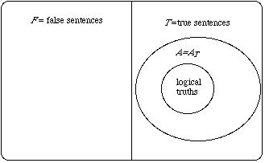
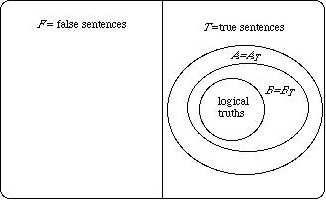
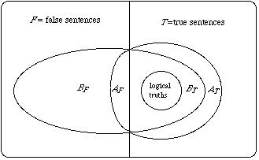
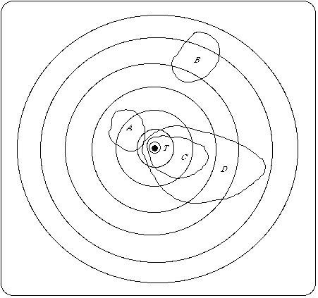
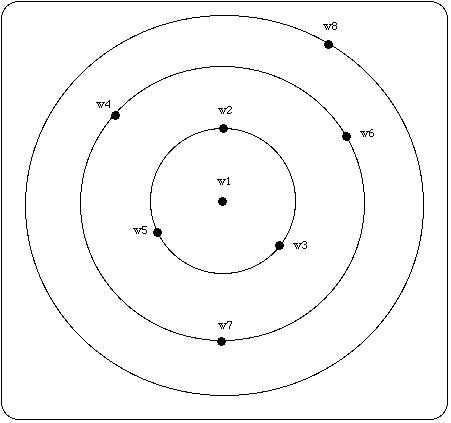
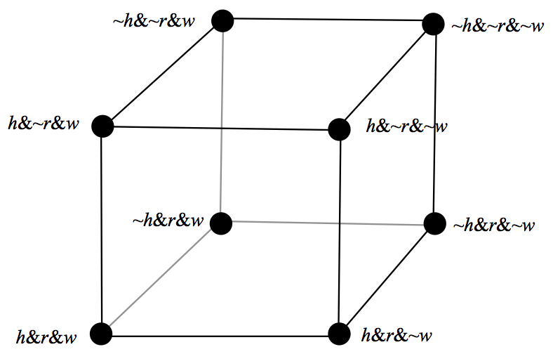

Truthlikeness
Truth is widely held to be the constitutive aim of inquiry. Even those who think the aim of inquiry is something more accessible than the truth (such as the empirically discernible truth), as well as those who think the aim is something more robust than possessing truth (such as the possession of knowledge) still affirm truth as a necessary component of the end of inquiry. And, other things being equal, it seems better to end an inquiry by endorsing truths rather than falsehoods.
Even if there is something to the thought that inquiry aims at truth, it has to be admitted that truth is a rather coarse-grained property of propositions. Some falsehoods seem to realize the aim of getting at the truth better than others. Some truths better realize the aim than other truths. And perhaps some falsehoods even realize the aim better than some truths do. The dichotomy of the class of propositions into truths and falsehoods needs to be supplemented with a more fine-grained ordering — one which classifies propositions according to their closeness to the truth, their degree of truthlikeness, or their verisimilitude.
We begin with the logical problem of truthlikeness: the problem of giving an adequate account of the concept and determining its logical properties. In §1 we lay at the logical problem and various possible solutions to it. In §1.1 we examine the basic assumptions which generate the logical problem, which in part explain why the problem emerged when it did. Attempted solutions to the problem quickly proliferated, but they can be gathered together under three broad lines of attack. The first two, the content approach (§1.2) and the consequence approach (§1.3), were both initiated by Popper in his ground-breaking work and both deliver what he regarded as an essential desideratum for any theory of truthlikeness — what we will call the value of content for truths. Although Popper's specific proposals did not capture the intuitive concept, the content and consequence approaches are still being actively developed and refined. The third, the likeness approach (§1.4), takes the likeness in truthlikeness seriously. Assuming likeness relations among worlds, the likeness of a proposition to the truth would seem to be some function of the likeness of worlds that make the proposition true to the actual world. The main problems facing the likeness approach are outlined in §1.4.1 –§1.4.4.
Given that there are at least three different approaches to the logical problem, a natural question is whether there might be a way of combining the different desiderata that motivate them (§1), thereby incorporating the most desirable features of each. Recent results suggest that unfortunately the three approaches, while not logically incompatible, cannot be fruitfully combined. Any attempt to unify these approaches will have to jettison or radically modify at least one of the motivating desiderata.
There are two further problems of truthlikeness, both of which presuppose the solution of the logical problem. One is the epistemological problem of truthlikeness (§2). Even given a suitable solution to the logical problem, there remains a nagging question about our epistemic access to truthlikeness. The other is the axiological problem. Truth and truthlikeness are interesting, at least in part because they appear to be cognitive values of some sort. Even if they are not cognitively valuable themselves, they are closely connected to what is of cognitive value. The relations between truth, truthlikeness and cognitive value are explored in §3.
- 1. The Logical Problem
- 2. The Epistemological Problem
- 3. The Axiological Problem
- 4. Conclusion
- Bibliography
- Academic Tools
- Other Internet Resources
- Related Entries
1. The Logical Problem
Truth, perhaps even more than beauty and goodness, has been the target of an extraordinary amount of philosophical dissection and speculation. This is unsurprising. After all, truth is the constitutive aim of all inquiry and a necessary condition of knowledge. And yet (as the redundancy theorists of truth have emphasized) there is something disarmingly simple about truth. That the number of planets is 8 is true just in case, well, … the number of planets is 8. By comparison with truth, the more complex and much more interesting concept of truthlikeness has only recently become the subject of serious investigation.The logical problem of truthlikeness is the problem of giving a consistent and materially adequate account of the concept. But before embarking on the project, we have to make it plausible that there is a coherent concept in the offing to be investigated.
1.1 What's the problem?
The proposition the number of planets in our solar system is 9 may be false, but quite a bit closer to the truth than the proposition that the number of planets in our solar system is 9 billion. (One falsehood may be closer to the truth than another falsehood.) The true proposition the number of the planets is between 7 and 9 inclusive is closer to the truth than the true proposition that the number of the planets is greater than equal to 0. (So a truth may be closer to the truth than another truth.) Finally, with the demotion of Pluto to planetoid status, the proposition that the number of the planets is either less than or greater than 9 may be true but it is arguably not as close to the whole truth of this matter (namely, that there are precisely 8 planets) as its highly accurate but strictly false negation: that there are 9 planets.
This particular numerical example is admittedly extremely simple, but a wide variety of judgments of relative likeness to truth crop up both in everyday parlance as well as in scientific discourse. While some involve the relative accuracy of claims concerning the value of numerical magnitudes, others involve the sharing of properties, structural similarity, or closeness among putative laws.
Consider a non-numerical example, also highly simplified but quite topical in the light of the recent rise in status of the concept of fundamentality. Suppose you are interested in the truth about which particles are fundamental. At the outset of your inquiry all you know are various logical truths, like the tautology either electrons are fundamental or they are not. Tautologies like these are pretty much useless in helping you locate the truth about fundamental particles. Now, suppose that the standard model is actually on the right tracks. Then learning the that electrons are fundamental (which we suppose, for the sake of the example, is true) edges you a little bit closer to your goal. It is by no means the complete truth about fundamental particles, but surely it is a piece of it. If you go on to learn that electrons, along with muons and tau particles, are a kind of lepton and that all leptons are fundamental, you have presumably edged a little closer.
If this is right, then some truths are closer to the truth about fundamental particles than others.
The discovery that atoms are not fundamental, that they are in fact composite objects, displaced the earlier hypothesis that atoms are fundamental. For a while the proposition that protons, neutrons and electrons are the fundamental components of atoms was embraced, but unfortunately it too turned out to be false. Still, this latter falsehood seems quite a bit closer to the truth than its predecessor (assuming, again, that the standard model is true). And even if the standard model contains errors, as surely it does, it is presumably closer to the truth about fundamental particles than these other falsehoods. At least, it makes sense to suppose that it might be.
So again, some falsehoods may be closer to the truth about fundamental particles than other falsehoods.
As we have seen, a tautology is not a terrific truth locator, but if you moved from the tautology that electrons either are or are not fundamental to embrace the false proposition that electrons are not fundamental you would have moved further from your goal.
So, some truths are closer to the truth than some falsehoods.
But it is by no means obvious that all truths about fundamental particles are closer to the whole truth than any falsehood. If you move from the tautology to the false proposition that electrons, protons and neutrons are the fundamental components of atoms, you may well have taken a step towards the truth.
If this is right, certain falsehoods may be closer to the truth than some truths.
Investigations into the concept of truthlikeness began in earnest with a tiny trickle of activity in the early nineteen sixties; became something of a torrent from the mid-seventies until the late eighties; and is now a relatively steady stream. Why is truthlikeness such a latecomer to the philosophical scene? The reason is simple. It wasn't until the latter half of the twentieth century that mainstream philosophers gave up on the Cartesian goal of infallible knowledge. The idea that we are quite possibility, even probably, mistaken in our most cherished beliefs, that they might well be just false, was mostly considered tantamount to capitulation to the skeptic. By the middle of the twentieth century, however, it was clear that natural science postulated a very odd world behind the phenomena, one rather remote from our everyday experience, one which renders many of our commonsense beliefs, as well as previous scientific theories, strictly speaking, false. Further, the increasingly rapid turnover of scientific theories suggested that, far from being established as certain, they are ever vulnerable to refutation, and typically are eventually refuted, to be replaced by some new theory. Taking the dismal view, the history of inquiry is a history of theories shown to be false, replaced by other theories awaiting their turn at the guillotine. (This is the “dismal induction”.)
Realism holds that the constitutive aim of inquiry is the truth of some matter. Optimism holds that the history of inquiry is one of progress with respect to its constitutive aim. But fallibilism holds that, typically, our theories are false or very likely to be false, and when shown to be false they are replaced by other false theories. To combine all three ideas, we must affirm that some false propositions better realize the goal of truth — are closer to the truth — than others. So the optimistic realist who has discarded infallibilism has a problem — the logical problem of truthlikeness.
Before exploring possible solutions to the logical problem a couple of common confusions should be cleared away. Truthlikeness should not be conflated with either epistemic probability or with vagueness.
One common mistake is to conflate truthlikeness with vagueness. Suppose vagueness is not an epistemic phenomenon, and that it can be explained by treating truth and falsehood as extreme points on a scale of distinct truth values. Even if there are vagueness-related “degrees of truth”, ranging from clearly true through to clearly false, they should not be confused with degrees of closeness to the truth. To see this, suppose Alan is exactly 179 cm tall. Then the proposition that Alan is exactly 178.5 cm tall should turn out to be clearly false on any good theory of vagueness. Nevertheless it is pretty close to the truth. That Alan is tall, on the other hand, is a vague claim, one that in the circumstances is neither clearly true nor clearly false. However, since it closer to the clearly true end of the spectrum, it has a high (vagueness-related) degree of truth. Still, Alan is tall is not as close to the truth as the quite precise, but nevertheless clearly false proposition that Alan is exactly 178.5 cm tall. So closeness to the truth and vagueness-related degrees of truth (if there are such) can also pull in different directions.
Neither does truthlikeness — likeness to the whole truth of some matter — have much to do with high probability. The probability that the number of planets is greater than or equal to 0 is maximal but not terribly close to the whole truth. Suppose some non-tautological true propositions can be known for certain — call their conjunction the evidence. Then any truth that goes beyond the evidence will be less probable than the evidence. However truths that go beyond the evidence might well be closer to the whole truth than the evidence is. The true proposition which goes most beyond the evidence is the strongest possible truth — it is the truth, the whole truth and nothing but the truth. And that true proposition is clearly the one that is closest to the whole truth. So the truth with the least probability on the evidence is the proposition that is closest to the whole truth.
What, then, is the source of the widespread conflation of truthlikeness with probability? Probability — at least of the epistemic variety — measures the degree of seeming to be true, while truthlikeness measures the degree of being similar to the truth. Seeming and being similar might at first strike one as closely related, but of course they are very different. Seeming concerns the appearances whereas being similar concerns the objective facts, facts about similarity or likeness. Even more important, there is a difference between being true and being the truth. The truth, of course, has the property of being true, but not every proposition that is true is the truth in the sense of the aim of inquiry. The truth of a matter at which an inquiry aims is ideally the complete, true answer to its central query. Thus there are two dimensions along which probability (seeming to be true) and truthlikeness (being similar to the truth) differ radically.
While a multitude of apparently different solutions to the problem have been proposed, they can be classified them into three main approaches, each with its own heuristic — the content approach, the consequence approach and the likeness approach.
1.2 The content approach
Karl Popper was the first philosopher to take the logical problem of truthlikeness seriously enough to make an assay on it. This is not surprising, since Popper was also the first prominent realist to embrace a very radical fallibilism about science while also trumpeting the epistemic superiority of the enterprise.
According to Popper, Hume had shown not only that we can't verify any interesting theory, we can't even render it more probable. Luckily, there is an asymmetry between verification and falsification. While no finite amount of data can verify or probabilify any interesting scientific theory, they can falsify the theory. According to Popper, it is the falsifiability of a theory which makes it scientific, the more falsifiable the better. In his early work, he implied that the only kind of progress an inquiry can make consists in falsification of theories. This is a little depressing, to say the least. What it lacks is the idea that a succession of falsehoods can constitute genuine cognitive progress. Perhaps this is why, for many years after first publishing these ideas in his 1934 Logik der Forschung Popper received a pretty short shrift from the philosophers. If all we can ever .say with confidence is “Missed again!” and “A miss is as good as a mile!”, and the history of inquiry is a sequence of such misses, then epistemic pessimism pretty much follows. Popper eventually realized that this naive falsificationism is compatible with optimism provided we have an acceptable notion of verisimilitude (or truthlikeness). If some false hypotheses are closer to the truth than others, if verisimilitude admits of degrees, then the history of inquiry may well turn out to be one of progress towards the goal of truth. Moreover, it may be reasonable, on the basis of the evidence, to conjecture that our theories are indeed making such progress even though we know they are all false, or highly likely to be false.
Popper saw clearly that the concept of truthlikeness should not be confused with the concept of epistemic probability, and that it has often been so confused. (See Popper 1963 for a history of the confusion.) Popper's insight here was undoubtedly facilitated by his deep but largely unjustified antipathy to epistemic probability. He thought his starkly falsificationist account favored bold, contentful theories. Degree of informative content varies inversely with probability — the greater the content the less likely a theory is to be true. So if you are after theories which seem, on the evidence, to be true, then you will eschew those which make bold — that is, highly improbable — predictions. On this picture, the quest for theories with high probability is simply wrongheaded.
To see this distinction clearly, and to articulate it, was one of Popper's most significant contributions, not only to the debate about truthlikeness, but to philosophy of science and logic in general. As we will see, however, his deep antagonism to probability combined with his passionate love affair with boldness was both a blessing and a curse. The blessing: it led him to produce not only the first interesting and important account of truthlikeness, but to initiate a whole approach to the problem — the content approach (Zwart 2001). The curse: content alone is insufficient to characterize truthlikeness.
Popper made the first real assay on the logical problem of truthlikeness in his famous collection Conjectures and Refutations. Since he was a great admirer of Tarski's assay on the concept of truth, he strove to model his theory of truthlikeness on Tarski's theory. First, let a matter for investigation be circumscribed by a formalized language L adequate for discussing it. Tarski showed us how the actual world induces a partition of sentences of L into those that are true and those that are false. The set of all true sentences is thus a complete true account of the world, as far as that investigation goes. It is aptly called the Truth, T. T is the target of the investigation couched in L. It is the theory that we are seeking, and, if truthlikeness is to make sense, theories other than T, even false theories, come more or less close to capturing T.
T, the Truth, is a theory only in the technical Tarskian sense, not in the ordinary everyday sense of that term. It is a set of sentences closed under the consequence relation: a consequence of some sentences in the set is also a sentence in the set. T may not be finitely axiomatizable, or even axiomatizable at all. Where the language involves elementary arithmetic it follows (from Gödel's incompleteness theorem) that T won't be axiomatizable. However, it is a perfectly good set of sentences all the same. In general we will follow the Tarski-Popper usage here and call any set of sentences closed under consequence a theory, and we will assume that each proposition we deal with is identified with the theory it generates in this sense. (Note that when theories are classes of sentences, theory A logically entails theory B just in case B is a subset of A.)
The complement of T, the set of false sentences F, is not a theory even in this technical sense. Since falsehoods always entail truths, F is not closed under the consequence relation. (This is part of the reason we have no complementary expression like the Falsth. The set of false sentences does not describe a possible alternative to the actual world.) But F too is a perfectly good set of sentences. The consequences of any theory A that can be formulated in L will thus divide its consequences between T and F. Popper called the intersection of A and T, the truth content of A (AT), and the intersection of A and F, the falsity content of A (AF). Any theory A is thus the union of its non-overlapping truth content and falsity content. Note that since every theory entails all logical truths, these will constitute a special set, at the center of T, which will be included in every theory, whether true or false.

Diagram 1: Truth and falsity contents of false theory A
A false theory will cover some of F, but because every false theory has true consequences, it will also overlap with some of T (Diagram 1).
A true theory, however, will only cover T (Diagram 2):

Diagram 2: True theory A is identical to its own truth content
Amongst true theories, then, it seems that the more true sentences that are entailed, the closer we get to T, hence the more truthlike. Set theoretically that simply means that, where A and B are both true, A will be more truthlike than B just in case B is a proper subset of A (which for true theories means that BT is a proper subset of AT). Call this principle: the value of content for truths.

Diagram 3: True theory A has more truth content than true theory B
This essentially syntactic account of truthlikeness has some nice features. It induces a partial ordering of truths, with the whole Truth T at the top of the ordering: T is closer to the Truth than any other true theory. The set of logical truths is at the bottom: further from the Truth than any other true theory. In between these two extremes, true theories are ordered simply by logical strength: the more logical content, the closer to the Truth. Since probability varies inversely with logical strength, amongst truths the theory with the greatest truthlikeness (T) must have the smallest probability, and the theory with the largest probability (the logical truth) is the furthest from the Truth. Popper made a bold and simple generalization of this. Just as truth content (coverage of T) counts in favor of truthlikeness, falsity content (coverage of F) counts against. In general then, a theory A is closer to the truth if it has more truth content without engendering more falsity content, or has less falsity content without sacrificing truth content (diagram 4):

Diagram 4: False theory A closer to the Truth than false theory B
The generalization of the truth content comparison also has some nice features. It preserves the comparisons of true theories mentioned above. The truth content AT of a false theory A (itself a theory in the Tarskian sense) will clearly be closer to the truth than A (diagram 1). More generally, a true theory A will be closer to the truth than a false theory B provided A's truth content exceeds B's.
Despite these nice features the account has a couple of disastrous consequences. Firstly, since a falsehood has some false consequences, and no truth has any, it follow that no falsehood can be as close to the truth as a logical truth — the weakest of all truths. A logical truth leaves the location of the truth wide open, so it is practically worthless as an approximation to the whole truth. So on Popper's account a falsehood is never more worthwhile than a worthless logical truth. (We could call this result the absolute worthlessness of falsehoods.
Furthermore, it is impossible to add a true consequence to a false theory without thereby adding additional false consequences (or subtract a false consequence without subtracting true consequences). So the account entails that no false theory is closer to the truth than any other. We could call this result the relative worthlessness of all falsehoods. These worthlessness results were proved independently by Pavel Tichý and David Miller (Miller 1974, and Tichý 1974).
It is instructive to see why this latter result holds. Let us suppose that A and B are both false, and that A's truth content exceeds B's. Let a be a true sentence entailed by A but not by B. Let f be any falsehood entailed by A. Since A entails both a and f the conjunction, a&f is a falsehood entailed by A, and so part of A's falsity content. If a&f were also part of B's falsity content B would entail both a and f. But then it would entail a contrary to the assumption. Hence a&f is in A's falsity content and not in B's. So A's truth content cannot exceeds B's without A's falsity content also exceeding B's. Suppose now that B's falsity content exceeds A's. Let g be some falsehood entailed by B but not by A, and let f, as before, be some falsehood entailed by A. The sentence f→g is a truth, and since it is entailed by g, is in B's truth content. If it were also in A's then both f and f→g would be consequences of A and hence so would g, contrary to the assumption. Thus A's truth content lacks a sentence, f→g, which is in B's. So B's falsity content cannot exceeds A's without B's truth content also exceeding A's. The relationship depicted in diagram 4 simply cannot obtain.
It is tempting at this point (and Popper was so tempted) to retreat to something like the comparison of truth contents alone. That is to say, A is as close to the truth as B if A entails all of B's truth content, and A is closer to the truth than B just in case A is at least as close as B, and B is not at least as close as A. Call this the Simple Truth Content account.
This Simple Truth Content account preserves Popper's ordering of true propositions. However, it also deems a false proposition the closer to the truth the stronger it is. (Call this principle: the value of content for falsehoods.) According to this principle, since the false proposition that there are seven planets, and all of them are made of green cheese is logically stronger than the false proposition that there are seven planets the former is closer to the truth than the latter. So, once we know a theory is false we can be confident that tacking on any old arbitrary proposition, no matter how misleading it is, will lead us inexorably closer to the truth. Amongst false theories, brute logical strength becomes the sole criterion of a theory's likeness to truth. This is the brute strength objection.
Popper also dabbled in some measures of verisimilitude, based on measures of content, which in turn he derived from measures of logical probability (somewhat ironically, given his dim view of logical probability). Unfortunately his measures suffered from defects very similar to his purely qualitative proposals.
After the failure of Popper's attempts to capture the notion of truthlikeness, a number of variations on the content approach have been explored. Some stay within Popper's essentially syntactic paradigm, comparing classes of true and false sentences (e.g. Newton Smith 1981). Others make the switch to a more semantic paradigm, searching for a plausible theory of distance between the semantic content of sentences, construing these semantic contents as classes of possibilities. A variant of this approach takes the class of models of a language as a surrogate for possible states of affairs (Miller 1978a). The other utilizes a semantics of incomplete possible states like those favored by structuralist accounts of scientific theories (Kuipers 1987b). The idea which these share in common is that the distance between two propositions is measured by the symmetric difference of the two sets of possibilities. Roughly speaking, the larger the symmetric difference, the greater the distance between the two propositions. Symmetric differences might be compared qualitatively – by means of set-theoretic inclusion - or quantitatively, using some kind of probability measure. Both can be shown to have the general features of a measure of distance.
If the truth is taken to be given by a complete possible world (or perhaps represented by a unique model) then we end up with results rather close to the truncated version of Popper's account, comparing by truth contents alone (Oddie 1978). In particular, amongst both truths and falsehoods, one proposition is closer to the truth than another the stronger it is. However, if we take the structuralist approach then we will take the relevant possibilities to be “small” states of affairs — small chunks of the world, rather than an entire world — and then the possibility of more fine-grained distinctions between theories opens up. A rather promising exploration of this idea can be found in Volpe 1995.
The fundamental problem with the original content approach lies not in the way it has been articulated, but rather in the basic underlying assumption: that truthlikeness is a function of just two variables — content and truth value. This assumption has a number of rather problematic consequences.
Two things follow if truthlikeness is a function just of the logical content of a proposition and of its truth value. Firstly, any given proposition A can have only two degrees of verisimilitude: one in case it is false and the other in case it is true. This is obviously wrong. A theory can be false in very many different ways. The proposition that there are eight planets is false whether there are nine planets or a thousand planets, but its degree of truthlikeness is much higher in the first case than in the latter. As we will see below, the degree of truthlikeness of a true theory may also vary according to where the truth lies. Secondly, if we combine the value of content for truths and the value of content for falsehoods, then if we fix truth value, verisimilitude will vary only according to amount of content. So, for example, two equally strong false theories will have to have the same degree of verisimilitude. That's pretty far-fetched. That there are ten planets and that there are ten billion planets are (roughly) equally strong, and both are false in fact, but the latter seems much further from the truth than the former.
Finally, how might strength determine verisimilitude amongst false theories? There seem to be just two plausible candidates: that verisimilitude increases with increasing strength (the principle of the value of content for falsehoods) or that it decreases with increasing strength (the principle of the disvalue of content for falsehoods). Both proposals are at odds with attractive judgements and principles. One does not necessarily make a step toward the truth by reducing the content of a false proposition. The proposition that the moon is made of green cheese is logically stronger than the proposition that either the moon is made of green cheese or it is made of dutch gouda, but the latter hardly seems a step towards the truth. Nor does one necessarily make a step toward the truth by increasing the content of a false theory. The false proposition that all heavenly bodies are made of green cheese is logically stronger than the false proposition all heavenly bodies orbiting the earth are made of green cheese but it doesn't seem to be an improvement.
1.3 The Consequence Approach
Popper crafted his initial proposal in terms of the true and false consequences of a theory. Any sentence at all that follows from a theory is counted as a consequence that, if true, contributes to its overall truthlikeness, and if false, detracts from that. But it has struck many that this both involves an enormous amount of double counting, and that it is the indiscriminate counting of arbitrary consequences that lies behind the Tichý-Miller trivialization result.
Consider a very simple framework with three primitive sentences: h (for the state hot), r (for rainy) and w (for windy). This framework generates a very small space of eight possibilities. The eight maximal conjunctions of the three primitive sentences express those possibilities.
Suppose that in fact it is hot, rainy and windy (expressed by the maximal conjunction h&r&w). Then the claim that it is cold, dry and still (expressed by the sentence ~h&~r&~w) is further from the truth than the claim that it is cold, rainy and windy (expressed by the sentence ~h&r&w). And the claim that it is cold, dry and windy (expressed by the sentence ~h&~r&w) is somewhere between the two. These kinds of judgements, which seem both innocent and intuitively correct, Popper's theory cannot accommodate. And if they are to be accommodated we cannot treat all true and false consequences alike. For the three false claims mentioned here have exactly the same number of true and false consequences.
Clearly, if we are going to measure closeness to truth by counting true and false consequences, some true consequences have to count more than others if we are to discriminate amongst them. For example, h and r are both true, and ~h and ~r are false. The former should surely count in favor of a claim, and the latter against. But ~h→~r is true and h→~r is false. After we have counted the truth h in favor of a claim's truthlikeness and the falsehood ~r against it, should we also count the true consequence ~h→~r in favor, and the falsehood h→~r against? Surely this is both unnecessary and misleading. And it is precisely counting sentences like these that renders Popper's account, in terms of all true and false consequences, susceptible to the Tichý-Miller argument.
According to the consequence approach, Popper was right in thinking that truthlikeness depends on the relative sizes of classes of true and false consequences, but erred in thinking that all consequences of a theory count the same. Some consequences are relevant, some aren't. Let R be some criterion of relevance of consequences; let AR be the set of relevant consequences of A. Whatever the criterion R is it has to satisfy the constraint that A be recoverable from (and hence equivalent to ) AR. Popper's account is the limiting one — all consequences are relevant. (Popper's relevance criterion is the empty one, P, according to which AP is just A itself.) The relevant truth content of A (abbreviated ART) can be defined as AR∩T (or A∩TR), and similarly the relevant falsity content of A can be defined as AR∩F. Since AR = (AR∩T)∪(AR∩F) it follows that the union of true and false relevant consequences of A is equivalent to A. And where A is true AR∩F is empty, so that A is equivalent to AR∩T alone.
With this restriction to relevant consequences we can basically apply Popper's definitions: one theory is more truthlike than another if its relevant truth content is larger and its relevant falsity content no larger; or its relevant falsity content is smaller, and its relevant truth content is no smaller.
Although this basic idea was first explored by Mortensen in his 1983, explicitly using a notion of relevant entailment, by the end of his paper Mortensen had abandoned the basic idea as unworkable, at least within the framework of standard relevant logics. Others, however, have used the relevant consequence approach to avoid the trivialization results that plague the content approach, and capture quite a few of the basic intuitive judgments of truthlikeness. Subsequent proposals within the broad program have been offered by Burger and Heidema 1994, Schurz and Weingartner 1987 and 2010, and Gemes 2007. (Gerla also uses the notion of the relevance of a “test” or factor, but his account is best located more squarely within the likeness approach.)
One possible relevance criterion that the h-r-w framework might suggest is atomicity. (See Cevolani, Festa and Kuipers 2013) for an approach along these lines.) But even if we could avoid the problem of saying what it is for a sentence to be atomic, since many distinct propositions imply the same atomic sentences, this criterion would not satisfy requirement that A be equivalent to AR. For example, (h∨r) and (~h∨~r), like tautologies, imply no atomic sentences at all.
Burger and Heidema 1994 compare theories by positive and negative sentences. A positive sentence is one that can be constructed out of &, ∨and any true basic sentence (where a basic sentence is either an atomic sentence or its negation). A negative sentence is one that can be constructed out of &, ∨ and any false basic sentence. Call a sentence pure if it is either positive or negative. If we take the relevance criterion to be purity, and combine that with the relevant consequence schema above, we have Burger and Heidema's proposal, which yields a reasonable set intuitive judgments like those above. Unfortunately purity (like atomicity) does not quite satisfy the constraint that A be equivalent to the class of its relevant consequences. For example, if h and r are both true then (~h∨r) and (h∨~r) both have the same pure consequences (namely, none).
Schurz and Weingartner 2010 use the following notion of relevance S: being equivalent to a disjunction of atomic propositions or their negations. With this criterion they can accommodate a range of intuitive judgments in the simple weather framework that Popper's account cannot.
For example, where >S is the relation of greater S-truthlikeness we capture the following relations among false claims, which, on Popper's account, are mostly incommensurable:
(h&~r) >S (~r) >S (~h&~r).
and
(h∨r) >S (~r) >S (~h∨~r) >S (~h&~r).
The relevant consequence approach faces three major hurdles.
The first is an extension problem: the approach does produce some intuitively acceptable results in a finite propositional framework, but it needs to be extended to more realistic frameworks — for example, first-order and higher-order frameworks. Gemes's recent proposal in his 2007 is promising in this regard. More research is required to demonstrate its adequacy.
The second is that, like Popper's original proposal, it judges no false proposition to be closer to the truth than any truth, including logical truths. Schurz and Weingartner have answered this objection by extending their qualitative account to a quantitative account, by assigning weights to relevant consequences and summing. The problem with this is that it assumes finite consequence classes.
The third involves the language-dependence of any adequate relevance criterion. This problem will be outlined and discussed below in connection with the likeness approach (§1.4.4).
1.4 The Likeness Approach
In the wake of the collapse of Popper's articulation of the content approach two philosophers, working quite independently, suggested a radically different approach: one which takes the likeness in truthlikeness seriously (Tichý 1974, Hilpinen 1976). This shift from content to likeness was also marked by an immediate shift from Popper's essentially syntactic approach (something it shares with the consequence program) to a semantic approach, one which trafficks in the contents of sentences.
Traditionally the semantic contents of sentences have been taken to be non-linguistic, or rather non-syntactic, items — propositions. What propositions are is, of course, highly contested, but most agree that a proposition carves the class of possibilities into two sub-classes — those in which the proposition is true and those in which it is false. Call the class of worlds in which the proposition is true its range. Some have proposed that propositions be identified with their ranges (for example, David Lewis, in his 1986). This identification is implausible since, for example, the informative content of 7+5=12 seems distinct from the informative content of 12=12, which in turn seems distinct from the informative content of Gödel's first incompleteness theorem – and yet all three have the same range. They are all true in all possible worlds. Clearly if semantic content is supposed to be sensitive to informative content, classes of possible worlds will not be discriminating enough. We need something more fine-grained for a full theory of semantic content.
Despite this, the range of a proposition is certainly an important aspect of informative content, and it is not immediately obvious why truthlikeness should be sensitive to differences in the way a proposition picks out its range. (Perhaps there are cases of logical falsehoods some of which seem further from the truth than others. For example 7+5=113 might be considered further from the truth than 7+5=13 though both have the same range — namely, the empty set of worlds. See Sorenson 2007.) But as a first approximation to the concept, we will assume that it is not hyperintensional and that logically equivalent propositions have the same degree of truthlikess. The proposition that the number of planets is eight for example, should have the same degree of truthlikeness as the proposition that the square of the number of the planets is sixty four.
There is also not a little controversy over the nature of possible worlds. One view — perhaps Leibniz's and more recently David Lewis's — is that worlds are maximal collections of possible things. Another — perhaps the early Wittgenstein's — is that possible worlds are complete possible ways for things to be. On this latter state-conception, a world is a complete distribution of properties, relations and magnitudes over the appropriate kinds of entities. Since invoking “all” properties, relations and so on will certainly land us in paradox, these distributions, or possibilities, are going to have to be relativized to some circumscribed array of properties and relations. Call the complete collection of possibilities, given some array of features, the logical space, and call the array of properties and relations which underlie that logical space, the framework of the space.
Familiar logical relations and operations correspond to well-understood set-theoretic relations and operations on ranges. The range of the conjunction of two proposition is the intersection of the ranges of the two conjuncts. Entailment corresponds to the subset relation on ranges. The actual world is a single point in logical space — a complete specification of every matter of fact (with respect to the framework of features) — and a proposition is true if its range contains the actual world, false otherwise. The whole Truth is a true proposition that is also complete: it entails all true propositions. The range of the Truth is none other than the singleton of the actual world. That singleton is the target, the bullseye, the thing at which the most comprehensive inquiry is aiming.
Without additional structure on the logical space we have just three factors for a theorist of truthlikeness to work with — the size of a proposition (content factor), whether it contains the actual world (truth factor), and which propositions it implies (consequence factor). The likeness approach requires some additional structure to the logical space. For example, worlds might be more or less like other worlds. There might be a betweenness relation amongst worlds, or even a fully-fledged distance metric. If that's the case we can start to see how one proposition might be closer to the Truth — the proposition whose range singles out the actual world — than another. The core of the likeness approach is that the truthlikeness of a proposition supervenes on the likeness between worlds, or the distance between worlds.
The likeness theorist has two initial tasks: firstly, making it plausible that there is an appropriate likeness or distance function on worlds; and secondly, extending likeness between individual worlds to likeness of propositions (i.e. sets of worlds) to the actual world.

Diagram 5: Verisimilitude by similarity circles
Suppose, for example, that worlds are arranged in similarity spheres nested around the actual world, familiar from the Stalnaker-Lewis approach to counterfactuals. Consider Diagram 5.
The bullseye is the actual world and the small sphere which includes it is T, the Truth. The nested spheres represent likeness to the actual world. A world is less like the actual world the larger the first sphere of which it is a member. Propositions A and B are false, C and D are true. A carves out a class of worlds which are rather close to the actual world — all within spheres two to four — whereas B carves out a class rather far from the actual world — all within spheres five to seven. Intuitively A is closer to the bullseye than is B.
The largest sphere which does not overlap at all with a proposition is plausibly a measure of how close the proposition is to being true. Call that the truth factor. A proposition X is closer to being true than Y if the truth factor of X is included in the truth factor of Y. The truth factor of A, for example, is the smallest non-empty sphere, T itself, whereas the truth factor of B is the fourth sphere, of which T is a proper subset.
If a proposition includes the bullseye then of course it is true simpliciter, it has the maximal truth factor (the empty set). So all true propositions are equally close to being true. But truthlikeness is not just a matter of being close to being true. The tautology, D, C and the Truth itself are equally true, but in that order they increase in their closeness to the whole truth.
Taking a leaf out of Popper's book, Hilpinen argued that closeness to the whole truth is in part a matter of degree of informativeness of a proposition. In the case of the true propositions, this correlates roughly with the smallest sphere which totally includes the proposition. The further out the outermost sphere, the less informative the proposition is, because the larger the area of the logical space which it covers. So, in a way which echoes Popper's account, we could take truthlikeness to be a combination of a truth factor (given by the likeness of that world in the range of a proposition that is closest to the actual world) and a content factor (given by the likeness of that world in the range of a proposition that is furthest from the actual world):
A is closer to the truth than B if and only if A does as well as B on both truth factor and content factor, and better on at least one of those.
Applying Hilpinen's definition we capture two more particular judgements, in addition to those already mentioned, that seem intuitively acceptable: that C is closer to the truth than A, and that D is closer than B. (Note, however, that we have here a partial ordering: A and D, for example, are not ranked.) We can derive from this various apparently desirable features of the relation closer to the truth: for example, that the relation is transitive, asymmetric and irreflexive; that the Truth is closer to the Truth than any other theory; that the tautology is at least as far from the Truth as any other truth; that one cannot make a true theory worse by strengthening it by a truth (a weak version of the value of content for truths); that a falsehood is not necessarily improved by adding another falsehood, or even by adding another truth (a repudiation of the value of content for falsehoods).
But there are also some worrying features here. While it avoids the relative worthlessness of falsehoods, Hilpinen's account, just like Popper's, entails the absolute worthlessness of all falsehoods: no falsehood is closer to the truth than any truth. So, for example, Newton's theory is deemed to be no more truthlike, no closer to the whole truth, than the tautology.
Characterizing Hilpinen's account as a combination of a truth factor and an information factor seems to mask its quite radical departure from Popper's account. The incorporation of similarity spheres signals a fundamental break with the pure content approach, and opens up a range of possible new accounts: what such accounts have in common is that the truthlikeness of a proposition is a non-trivial function of the likeness to the actual world of worlds in the range of the proposition.
There are three main problems for any concrete proposal within the likeness approach. The first concerns an account of likeness between states of affairs – in what does this consist and how can it be analyzed or defined? The second concerns the dependence of the truthlikeness of a proposition on the likeness of worlds in its range to the actual world: what is the correct function? (This can be called “the extension problem”.) And finally, there is the famous problem of “translation variance” or “framework dependence” of judgements of likeness and of truthlikeness. This last problem will be taken up in §1.4.4.
1.4.1 Likeness of worlds in a simple propositional framework
One objection to Hilpinen's proposal (like Lewis's proposal for counterfactuals) is that it assumes the similarity relation on worlds as a primitive, there for the taking. At the end of his 1974 paper Tichý not only suggested the use of similarity rankings on worlds, but also provided a ranking in propositional frameworks and indicated how to generalize this to more complex frameworks.
Examples and counterexamples in Tichý 1974 are exceedingly simple, utilizing the little propositional framework introduced above, with three primitives — h (for the state hot), r (for rainy) and w (for windy).
Corresponding to the eight-members of the logical space generated by distributions of truth values through the three basic conditions, there are eight maximal conjunctions (or constituents):
w1 h&r&w w5 ~h&r&w w2 h&r&~w w6 ~h&r&~w w3 h&~r&w w7 ~h&~r&w w4 h&~r&~w w8 ~h&~r&~w
Worlds differ in the distributions of these traits, and a natural, albeit simple, suggestion is to measure the likeness between two worlds by the number of agreements on traits. This is tantamount to taking distance to be measured by the size of the symmetric difference of generating states — the so-called city-block measure. As is well known, this will generate a genuine metric, in particular satisfying the triangular inequality. If w1 is the actual world this immediately induces a system of nested spheres, but one in which the spheres come with numbers attached:

Diagram 6: Similarity circles for the weather space
Those worlds orbiting on the sphere n are of distance n from the actual world.
In fact the structure of the space is better represented not by similarity circles, but rather but rather by a three-dimensional cube:

Diagram 7: The three-dimensional weather space
This way of representing the space makes a clearer connection between distances between worlds and the role of the atomic propositions in generating those distances through the city-block metric. It also eliminates inaccuracies in the relations between the worlds that are not at the center that the similarity circle diagram suggests.
1.4.2 The likeness of a proposition to the truth
Now that we numerical distances between worlds, numerical measures of propositional likeness to, and distance from, the truth can be defined as some function of the distances, from the actual world, of worlds in the range of a proposition. But which function is the right one? This is the extension problem .
Suppose, once more, that h&r&w is the whole truth about the matter of the weather. Following Hilpinen's lead, we might consider overall distance of a propositions from the truth to be some function of the distances from actuality of two extreme worlds. Let truth(A) be the truth value of A in the actual world. Let min(A) be the distance from actuality of that world in A closest to the actual world, and max(A) be the distance from actuality of that world in A furthest from the actual world.
Table 1: The min and max functions.
A truth(A) min(A) max(A) h&r&w true 0 0 h&r true 0 1 h&r&~w false 1 1 h true 0 2 h&~r false 1 2 ~h false 1 3 ~h&~r&w false 2 2 ~h&~r false 2 3 ~h&~r&~w false 3 3
The simplest proposal (made first in Niiniluoto 1977) would be to take the average of these two quantities might (call this measure min-max-average). This would remedy a rather glaring shortcoming which Hilpinen's qualitative proposal shares with Popper's original proposal, namely that no falsehood is closer to the truth than any truth (even the worthless tautology). This numerical equivalent of Hilpinen's proposal renders all propositions comparable for truthlikeness, and some falsehoods it deems more truthlike than some truths.
But now that we have distances between all worlds, why take only the extreme worlds in a proposition into account? Why shouldn't every world in a proposition potentially count towards its overall distance from the actual world?
A simple measure which does count all worlds is average distance from the actual world. Average delivers all of the particular judgements we used above to motivate Hilpinen's proposal in the first place, and in conjunction with the simple metric on worlds it delivers the following ordering of propositions in our simple framework:
Table 2: the average function.
A truth(A) average(A) h&r&w true 0 h&r true 0.5 h&r&~w false 1.0 h true 1.3 h&~r false 1.5 ~h false 1.7 ~h&~r&w false 2.0 ~h&~r false 2.5 ~h&~r&~w false 3.0
This ordering look quite promising. Propositions are closer to the truth the more they get the basic weather traits right, further away the more mistakes they make. A false proposition may be made either worse or better by strengthening (~w is the same distance from the Truth as ~h; h&r&~w is better than ~w while ~h&~r&~w is worse). A false proposition (like h&r&~w) can be closer to the truth than some true propositions (like h).
These judgments may be sufficient to show that average is superior to min-max-average), at least on this group of propositions, but they are clearly not sufficient to show that averaging is the right procedure. What we need are some straightforward and compelling general desiderata which jointly yield a single correct function. In the absence of such a proof, we can only resort to case by case comparisons.
Table 3: average violates the value of content for truths.
A truth(A) average(A) h ∨ ~r ∨ w true 1.4 h ∨ ~r true 1.5 h ∨ ~h true 1.5
Furthermore average has by no means found universal favor on the score of particular judgments either. Notably, there are pairs of true propositions such that the average measure deems the stronger of the two to be the further from the truth. According to the average measure, the tautology, for example, is not the true proposition furthest from the truth. Averaging thus violates the Popperian principle of the value of content for truths (Popper 1976).
Table 4: the sum function.
A truth(A) sum(A) h&r&w true 0 h&r true 1 h&r&~w false 1 h true 4 h&~r false 3 ~h false 8 ~h&~r&w false 2 ~h&~r false 5 h&~r&~w false 3
Consider the sum function — the sum of the distances of worlds in the range of a proposition from the actual world.
The sum function is an interesting measure in its own right, though no one has proposed it as a stand-alone account of closeness to truth. Although sum, like average is sensitive to the distances of all worlds in a proposition from the actual world, it is not plausible as a measure of distance from the truth. What sum does measure is a special kind logical weakness. In general the weaker a proposition is, the larger its sum value. But adding words far from the actual world makes the sum value larger than adding worlds closer in. This guarantees, for example, that of two truths the sum of the logically weaker is always greater than the sum of the stronger. Thus sum might play a role in capturing the value of content for truths. But it also delivers the implausible value of content for falsehoods. If you think that there is anything to the likeness program it is hardly plausible that the falsehood ~h&~r&~w is closer to the truth than its consequence ~h. Niiniluoto argues that sum is a good likeness-based candidate for measuring Hilpinen's “information factor”. It is obviously much more sensitive than is max to the proposition's informativeness about the location of the truth.
Table 5: The min-sum-average function.
A truth(A) min-sum-average(A) h&r&w true 0 h&r true 0.5 h&r&~w false 1 h true 2 h&~r false 2 ~h false 4.5 ~h&~r&w false 2 ~h&~r false 3.5 ~h&~r&~w false 3
Niiniluoto thus proposes, as a measure of distance from the truth, the average of this information factor and Hilpinen's truth factor: min-sum-average. Averaging the more sensitive information factor (sum) and the closeness-to-being-true factor (min) yields some interesting results. For example, this measure deems h&r&w more truthlike than h&r, and the latter more truthlike than h. And in general min-sum-average delivers the value of content for truths. For any two truths the min factor is the same (0), and the sum factor increases as content decreases. Furthermore, unlike the symmetric difference measures, min-sum-average doesn't deliver the objectionable value of contents for falsehoods. For example, ~h&~r&~w is deemed further from the truth than ~h. But min-sum-average is not quite home free. For example from an intuitive point of view. For example, ~h&~r&~w is deemed closer to the truth than ~h&~r. This is because what ~h&~r&~w loses in closeness to the actual world (min) it makes up for by an increase in strength (sum).
In deciding how to proceed here we confront a methodological problem. The methodology favored by Tichý is very much bottom-up. For the purposes of deciding between rival accounts it takes the intuitive data very seriously. Popper (along with Popperians like Miller) favor a more top-down approach. They are deeply suspicious of folk intuitions, and sometimes appear to be in the business of constructing a new concept rather than explicating an existing one. They place enormous weight on certain plausible general principles, largely those that fit in with other principles of their overall theory of science: for example, the principle that strength is a virtue and that the stronger of two true theories (and maybe even of two false theories) is the closer to the truth. A third approach, one which lies between these two extremes, is that of reflective equilibrium. This recognizes the claims of both intuitive judgements on low-level cases, and plausible high-level principles, and enjoins us to bring principle and judgement into equilibrium, possibly by tinkering with both. Neither intuitive low-level judgements nor plausible high-level principles are given advance priority. The protagonist in the truthlikeness debate who has argued most consistently for this approach is Niiniluoto.
How might reflective equilibrium be employed to help resolve the current dispute? Consider a different space of possibilities, generated by a single magnitude like the number of the planets (N). Suppose that N is in fact 8 and that the further n is from 8, the further the proposition that N=n from the Truth. Consider three sets of propositions. In the left-hand column we have a sequence of false propositions which, intuitively, decrease in truthlikeness while increasing in strength. In the middle column we have a sequence of corresponding true propositions, in each case the strongest true consequence of its false counterpart on the left (Popper's “truth content”). Again members of this sequence steadily increase in strength. Finally on the right we have another column of falsehoods. These are also steadily increasing in strength, and like the left-hand falsehoods, seem (intuitively) to be decreasing in truthlikeness as well.
Table 6
Falsehood (1) Strongest True Consequence Falsehood (2) 10 ≤ N ≤ 20 N=8 or 10 ≤ N ≤ 20 N=9 or 10 ≤ N ≤ 20 11 ≤ N ≤ 20 N=8 or 11 ≤ N ≤ 20 N=9 or 11 ≤ N ≤ 20 …… …… …… 19 ≤ N ≤ 20 N=8 or 19 ≤ N ≤ 20 N=9 or 19 ≤ N ≤ 20 N = 20 N=8 or N = 20 N=9 or N = 20
Judgements about the closeness of the true propositions in the center column to the truth may be less intuitively clear than are judgments about their left-hand counterparts. However, it would seem highly incongruous to judge the truths in table 4 to be steadily increasing in truthlikeness, while the falsehoods both to the left and the right, both marginally different in their overall likeness relations to truth, steadily decrease in truthlikeness. This suggests that that all three are sequences of steadily increasing strength combined with steadily decreasing truthlikeness. And if that's right, it might be enough to overturn Popper's principle that amongst true theories strength and truthlikeness must covary (even while granting that this is not so for falsehoods).
If this argument is sound, it removes an objection to averaging distances, but it does not settle the issue in its favor, for there may still be other more plausible counterexamples to averaging that we have not considered.
Schurz and Weingartner argue that this extension problem is the main defect of the likeness approach:
“the problem of extending truthlikeness from possible worlds to propositions is intuitively underdetermined. Even if we are granted an ordering or a measure of distance on worlds, there are many very different ways of extending that to propositional distance, and apparently no objective way to decide between them.” (Schurz and Weingartner 2010, 423)
One way of answering this objection head on is to identify principles that, given a distance function on worlds, constrain the distances between worlds and sets of worlds, principles perhaps powerful enough to identify a unique extension. (An argument of this kind is considered in §1.5.)
1.4.3 Likeness in more complex frameworks
Simple propositional examples are convenient for the purposes of illustration, but what the likeness approach needs is some evidence that it can transcend such simple examples. (Popper's content approach, whatever else its shortcomings, can be applied in principle to theories expressible in any language, no matter how sophisticated.) Can the likeness program be generalized to arbitrarily complex frameworks? For example, does the idea extend even to first-order frameworks the possible worlds of which may well be infinitely complex?
There is no straightforward, natural or obvious way to construct distance or likeness measures on worlds considered as non-denumerably infinite collections of basic or “atomic” states. But a fruitful way of implementing the likeness approach in frameworks that are more interesting and realistic than the toy propositional weather framework, involves cutting the space of possibilities down into manageable chunks. This is not just an ad hoc response to the difficulties imposed by infinite states, but is based on a principled view of the nature of inquiry — of what constitutes an inquiry, a question, a query, a cognitive problem, or a subject matter. Although these terms might seem to signify quite different notions they all have something deep in common.
Consider the notion of a query or a question. Each well-formed question Q receives an answer in each complete possible state of the world. Two worlds are equivalent with respect to the question Q if they receive the same answer in both worlds. Given that Q induces an equivalence relation on worlds, the question partitions the logical space into a set of mutually exclusive and jointly exhaustive cells: {C1, C2, ... , Ci, ...}. Each cell Ci is a complete possible answer to the question Q. And each incomplete answer to Q is tantamount to the union, or disjunction, of some collection of the complete answers. For example, the question what is the number of the planets? partitions the set of worlds into those in which N=0, those in which N=1, ..., and so on. The question what is the state of the weather? (relative to our three toy factors) partitions the set of worlds into those in which is hot, rainy and windy, those in which it is hot, rainy and still, ... and so on. (See Oddie 1986a.) In other words, the so-called “worlds” in the simple weather framework are in fact surrogates for large classes of worlds, and in each such class the answer to the coarse-grained weather question is the same. The elements of this partition are all complete answers to the weather question, and distances between the elements of the partition can be handled rather easily as we have seen. Essentially the same idea can be applied to much more complex questions.
Niiniluoto characterizes the notion of a cognitive problem in the same way, as a partition of a space of possibilities. And this same explication has been remarkably fruitful in clarifying the notions of aboutness and of a subject matter (Oddie 1986a, Lewis 1988).
Each inquiry is based on some question that admits of a range of possible complete answers, which effect a partition {C1, C2, ... , Cn, ...} of the space of worlds. Incomplete answers to the question are equivalent to disjunctions of those complete answers which entail the incomplete answer. Now, often there is a rather obvious measure of distance between the elements of such partitions, which can be extended to a measure of distance of an arbitrary answer (whether complete or partial) from the true answer.
One rather promising source of natural partitions (Tichý 1976, Niiniluoto 1977) are Hintikka's distributive normal forms (Hintikka 1963). These are smooth generalizations of the familiar maximal conjunctions of propositional frameworks used above. What corresponds to the maximal conjunctions are known as constituents, which, like maximal conjunctions in the propositional case, are jointly exhaustive and mutually exclusive. Constituents lay out, in a very perspicuous manner, all the different ways individuals can be related to each other— relative, of course, to some collection of basic attributes. (These correspond to the collection of atomic propositions in the propositional case.) The basic attributes can be combined by the usual boolean operations into complex attributes which are also like the maximal conjunctions, in that they form a partition of the class of individuals. These complex predicates are called Q-predicates in the simple monadic case, and attributive constituents in the more general case. Constituents specify, for each member in this set of mutually exclusive and jointly exhaustive complex attributes, whether or not that complex attribute is exemplified.
In the simplest case a framework of three basic monadic attributes (F,G and H) gives rise to eight complex attributes: — Carnap's Q-predicates:
Q1 F(x)&G(x)&H(x),
Q2 F(x)&G(x)&~H(x)
…
Q8 ~F(x)&~G(x)&~H(x)
The simplest constituents run through these Q – predicates (or attributive constituents) specifying for each one whether or not it is instantiated.
C1 ∃xQ1(x) & ∃xQ2(x) & ... & ∃xQ7(x) & ∃xQ8(x)
C2 ∃xQ1(x) & ∃xQ2(x) & ... & ∃xQ7(x) & ~∃xQ8(x)
…
C255 ~∃xQ1(x) & ~∃xQ2(x) & ... & ~∃xQ7(x) & ∃xQ8(x)
C256 ~∃xQ1(x) & ~∃xQ2(x) & ... & ~ ∃xQ7(x) & ~∃xQ8(x)
In effect the partition induced by the set constituents corresponds to the question: Which Q-predicates are instantiated? A complete answer to that question will specify one of the constituents, an incomplete answer will specify a disjunction of such.
Note that the last constituent in this listing, C256, is logically inconsistent. Given that the set of Q-predicates is jointly exhaustive, each individual has to satisfy one of them, so at least one of them has to be instantiated. Once such inconsistent constituents are omitted, every sentence in a monadic language (without identity or constants) is equivalent to a disjunction of a unique set of these constituents. (In the simple monadic case here there is only one inconsistent constituent, but in the general case there are many inconsistent constituents. Identifying inconsistent constituents is equivalent to the decision problem for first-order logic.)
For example, the sentence ∀x(F(x)&G(x)&H(x)) is logically equivalent to:
C64 ∃xQ1(x) & ~ ∃xQ2(x) & ... & ~∃xQ7(x) & ~ ∃xQ8(x).
The sentence ∀x(~F(x)&G(x)&H(x)) is logically equivalent to:
C128 ~∃xQ1(x) & ∃xQ2(x) & ~∃xQ1(x) & ... & ~∃xQ7(x) & ~∃xQ8(x).
The sentence ∀x(~F(x)&~G(x)&~H(x)) is logically equivalent to:
C255 ~∃xQ1(x) & ~∃xQ2(x) & ... &~ ∃xQ7(x) & ∃xQ8(x).
More typically, a sentence is equivalent to disjunction of constituents. For example the sentence ∀x(G(x)&H(x)) is logically equivalent to:
C64∨ C128.
And the sentence ∀x(F(x)∨G(x)∨H(x)) is logically equivalent to:
C1∨ C2 ∨ ... ∨ C253∨ C254.
Before considering whether distributive normal forms (disjunctions of constituents) can be generalized to more complex and interesting frameworks (involving relations and greater quantificational complexity) it is worth thinking about how to define distances between these constituents, since they are the simplest of all.
If we had a good measure of distance between constituents then presumably the distance of some disjunction of constituents from one particular constituent could be obtained using the right extension function (§1.4.2) whatever that happens to be. And then the distance of an arbitrary expressible proposition from the truth could be defined as the distance of its normal form from the true constituent.
As far as distances between constituents go, there is an obvious generalization of the city-block (or symmetric difference) measure on the corresponding maximal conjunctions (or propositional constituents): namely, the size of the symmetric difference of the sets of Q-predicates associated with each constituent. So, for example, since C1 and C2 differ on the instantiation of just one Q-predicate (namelyQ8) the distance between them would be 1. At the other extreme, since C2 and C255 disagree on the instantiation of every Q-predicate, the distance between them is 8 (maximal).
Niiniluoto first proposed this as the appropriate distance measure for these constituents in his 1977, and since he found a very similar proposal in Clifford, he called it the Clifford measure. Since it is based on symmetric differences it yields a function that satisfies the triangular inequality (the distance between X and Z is no greater than the sum of the distances between X and Y and Y and Z).
Note that on the Clifford measure the distance between C64 (which says that Q1 is the only instantiated Q-predicate) and C128 (which says that Q2 is the only instantiated Q-predicate) is the same as the distance between C64 and C255 (which says that Q8 is the only instantiated Q-predicate).
C255 ~∃xQ1(x) & ~∃xQ2(x) & ... & ~∃xQ7(x) & ∃xQ8(x)
C64 says that everything has F, G and H; C128, that everything has ~F, G and H; C255, that everything has ~F, ~G and ~H. If the likeness intuitions in the weather framework have anything to them, then C128 is closer to C64 than C255 is. Tichý (1976 and 1978) captured this intuition by first measuring the distances between Q-predicates using the city-block measure. Then the basic idea is to extend this distances between sets of Q-predicates by identifying the “minimal routes” from one set of such Q-predicates to another. The distance between two sets of Q-predicates is the distance along some minimal route.
Suppose that two normal forms feature the same number of constituents. That is, the two sets of Q-predicates associated with two constituents are the same size. Let a linkage be any 1-1 mapping from one set to the other. Let the breadth of the linkage be the average distance between linked items. Then according to Tichý the distance between two constituents (or their associated sets of Q-predicates) is the breadth of the narrowest linkage between them. If one constituent C contains more Q-predicates than the other then a linkage is defined as a surjection from the larger set to the smaller set, and the rest of the definition is the same.
This idea certainly captures the intuition concerning the relative distances between C128, C64 and C255. But it suffers the following defect: it does not satisfy the triangular inequality. This is because in a linkage between sets with different numbers of members, some Q-predicates will be unfairly represented, thereby possibly distorting the intuitive distance between the sets. This can be remedied, however, by altering the account of a linkage to make them fair. The details need not detain us here (for those see Oddie 1986a) but in a fair linkage each Q-predicate in a constituent receives the same weight in the linkage as it possesses in the constituent itself.
The simple Clifford measure ignores the distances between the Q-predicates, but it can be modified and refined in various ways to take account of such distances (see Niiniluoto 1987).
Hintikka showed that the distributive normal form theorem can be generalized to first-order sentences of any degree of relational or quantificational complexity. Any sentence of a first-order sentence comes with a certain quantificational depth —the number of its overlapping quantifiers. So, for example, analysis in the first-order idiom would reveal that (1) is a depth-1 sentence; (2) is a depth-2 sentence; and (3) is a depth-3 sentence.
(1) Everyone loves himself.
(2) Everyone who loves another is loved by the other.
(3) Everyone who loves another loves the other's lovers.
We could call a proposition depth-d if the shallowest depth at which it can be expressed is d. Hintikka showed how to define both attributive constituents and constituents of depth-d recursively, so that every depth-d proposition can be expressed by a disjunction of a unique set of (consistent) depth-d constituents.
Constituents can be represented as finite tree-structures, the nodes of which are all like Q-predicates – that is, strings of atomic formulas either negated or unnegated. Consequently, if we can measure distance between such trees we will be well down the path of measuring the truthlikeness of depth-d propositions – it will be some function of the distance of constituents in its normal form from the true depth-d constituent. And we can measure the distance between such trees using the same idea of a minimal path from one to the other. This too can be spelt out in terms of fair linkages between trees, thus guaranteeing the triangular inequality.
This program for defining distance between expressible propositions has proved quite flexible and fruitful, delivering a wide range of intuitively appealing results, at least in simple first-order cases. And the approach can be further refined – for example, by means of Carnap's concept of a family of properties.
There are yet more extension problems for the likeness program. First-order theories can be infinitely deep — that is to say, there is no finite depth at which such a theory theory can be expressed. The very feature of first-order constituents that makes them manageable — their finite structure — ensures that they cannot express propositions that are not finitely axiomatizable in a first-order language. Clearly it would be desirable for an account of truthlikeness to be able, in principle, to rank propositions that go beyond the expressive power of first-order sentences. First-order sentences lack the expressive power of first-order theories in general, and first-order languages lack the expressive resources of higher-order languages. A theory of truthlikeness that applies only to first-order sentences, while not a negligible achievement, would still have limited application.
There are plausible ways of extending the normal-form approach to these more complex cases. The relative truthlikeness of infinitely deep first-order propositions can be captured by taking limits as depth increases to infinity (Oddie 1978, Niiniluoto 1987). And Hintikka's normal form theorem, along with suitable measures of distance between higher-order constituents, can be extended to embrace higher-order languages (These higher-order “permutative constituents” are defined in Oddie 1986a and a normal form theorem proved.) Since there are propositions that are only expressible by a non-finitely axiomatizable theory in first-order logic that can be expressed by a single sentence of higher-order logic this greatly expands the reach of the normal-form approach.
Although scientific progress sometimes seems to consist in the accumulation facts about the existence of certain kinds of individuals (witness the recent excitement evoked by the discovery of the Higgs boson, for example) mostly the scientific enterprise is concerned with causation and laws of nature. L. J. Cohen has accused the truthlikeness program of completely ignoring this aspect of the aim of scientific inquiry.
… the truth or likeness to truth that much of science pursues is of a rather special kind – we might call it ‘physically necessary truth’ (Cohen 1980, 500)
The discovery of instances of new kinds (as well as the inability to find them when a theory predicts that they will appear under certain circumstances) is generally welcomed because of the light such discoveries throw on the structure of the laws of nature. The trouble with first-order languages is that they lack adequate resources to represent genuine laws. Extensional first-order logic embodies the Humean thesis that there are no necessary connections between distinct existences. At best first-order theories can capture pervasive, but essentially accidental, regularities.
There are various ways of modeling laws. According to the theory of laws favored by Tooley 1977 and Armstrong 1983, laws of nature involve higher-order relations between first-order universals. These, of course, can be represented easily in a higher-order language (Oddie 1982). But one might also capture lawlikeness in a first-order modal language supplemented with sentential operators for natural necessity and natural possibility (Niiniluoto 1983). And an even simpler representation in terms of nomic conjunctions in a propositional framework, which utilizes the simple city-block measure on partial constituents, has recently been developed in Cevolani, Festa and Kuipers 2012.
Another problem for the normal-form approach involves the fact that most interesting theories in science are not expressible in frameworks generated by basic properties and relations alone, but rather require continuous magnitudes — world-dependent functions from various entities to numbers. All the normal-form based accounts (even those developed for the higher-order) are for systems that involve basic properties and relations, but exclude basic functions. Of course, magnitudes can be finitely approximated by Carnap's families of properties, and relations between those can be represented in higher-order frameworks, but if those families are infinite then we lose the finitude characteristic of regular constituents. Once we lose those finite representations of states, the problem of defining distances becomes intractable again.
There is a well-known way of reducing n-argument functions to n+1-place relations. One could represent a magnitude of n-tuples of objects as a relation between n objects and numbers. One would have to include the set of real or complex numbers in the domain of individuals, or else have multiple domains at the lowest level. However, not only is that a somewhat ad hoc solution to the problem, but no interesting applications based on such a reduction have been explored. So each space has to be treated differently and the resulting theory lacks a certain unity. It would clearly be preferable to be able to give a unified treatment with different applications. It would also be preferable to be able to treat basic magnitudes on a par with basic properties and relations in the generation of logical space. Niiniluoto (in his 1987) showed how to extend the likeness approach to functional spaces (see also Kieseppa 1996) but so far there is no good extension of the distributive normal-form approach that both combines functions with properties and relations, and reduces the infinite complexity that these generate to finite or manageable proportions. Until such an account is forthcoming, the normal form approach does not provide a comprehensive theory of closeness to truth.
The problem of complexity might force a reconsideration of the methodology here. Instead of trying to define specific distance measures in a bottom-up piecemeal way, a more modest, more tractable, top-down approach might be to posit the existence of a (possibly partial) relation of likeness on worlds, satisfying various plausible structural features and desirable principles. Assuming these principles are consistent, this would in turn determine a class of numerical distance functions (all those that represent or realize them). Plausible principles could then be explored to narrow the class of admissible likeness functions. This idea is developed a little further in §1.5. But before we go there the most important objection to the likeness approach needs to be addressed.
1.4.4 The framework dependence of likeness
The single most powerful and influential argument against the whole likeness approach is the charge that it is “language dependent” or “framework dependent” (Miller 1974a, 1975 a, 1976, and most recently defended, vigorously as usual, in his 2006). Early formulations of the likeness approach (Tichý 1974, 1976, Niiniluoto 1976) proceeded in terms of syntactic surrogates for their semantic correlates — sentences for propositions, predicates for properties, constituents for partitions of the logical space, and the like. The question naturally arises, then, whether we obtain the same measures if all the syntactic items are translated into an essentially equivalent language — one capable of expressing the same propositions and properties with a different set of primitive predicates. Newton's theory can be formulated with a variety of different primitive concepts, but these formulations are typically taken to be equivalent. If the degree of truthlikeness of Newton's theory were to vary from one such formulation to another, then while such a concept might still might have useful applications, it would hardly help to vindicate realism.
Take our simple weather-framework above. This trafficks in three primitives — hot, rainy, and windy. Suppose, however, that we define the following two new weather conditions:
minnesotan =df hot if and only if rainy
arizonan =df hot if and only if windy
Now it appears as though we can describe the same sets of weather states in an h-m-a-ese based on these conditions.
Table 7
h-r-w-ese h-m-a-ese T h&r&w h&m&a A ~h&r&w ~h&~m&~a B ~h&~r&w ~h&m&~a C ~h&~r&~w ~h&m&a
If T is the truth about the weather then theory A, in h-r-w-ese, seems to make just one error concerning the original weather states, while B makes two and C makes three. However, if we express these two theories in h-m-a-ese however, then this is reversed: A appears to make three errors and B still makes two and C makes only one error. But that means the account makes truthlikeness, unlike truth, radically language-relative.
There are two live responses to this criticism. But before detailing them, note a dead one: the similarity theorist cannot object that h-m-a is somehow logically inferior to h-r-w, on the grounds that the primitives of the latter are essentially “biconditional” whereas the primitives of the former are not. This is because there is a perfect symmetry between the two sets of primitives. Starting within h-m-a-ese we can arrive at the original primitives by exactly analogous definitions:
rainy =df hot if and only if minnesotan
windy =df hot if and only if arizonan
Thus if we are going to object to h-m-a-ese it will have to be on other than purely logical grounds.
Firstly, then, the similarity theorist could maintain that certain predicates (presumably “hot”, “rainy” and “windy”) are primitive in some absolute, realist, sense. Such predicates “carve reality at the joints” whereas others (like “minnesotan” and “arizonan”) are gerrymandered affairs. With the demise of predicate nominalism as a viable account of properties and relations this approach is not as unattractive as it might have seemed in the middle of the last century. Realism about universals is certainly on the rise. While this version of realism presupposes a sparse theory of properties — that is to say, it is not the case that to every definable predicate there corresponds a genuine universal — such theories have been championed both by those doing traditional a priori metaphysics of properties (e.g. Bealer 1982) as well as those who favor a more empiricist, scientifically informed approach (e.g. Armstrong 1978, Tooley 1977). According to Armstrong, for example, which predicates pick out genuine universals is a matter for developed science. The primitive predicates of our best fundamental physical theory will give us our best guess at what the genuine universals in nature are. They might be predicates like electron or mass, or more likely something even more abstruse and remote from the phenomena — like the primitives of String Theory.
One apparently cogent objection to this realist solution is that it would render the task of empirically estimating degree of truthlikeness completely hopeless. If we know a priori which primitives should be used in the computation of distances between theories it will be difficult to estimate truthlikeness, but not impossible. For example, we might compute the distance of a theory from the various possibilities for the truth, and then make a weighted average, weighting each possible true theory by its probability on the evidence. That would be the credence-mean estimate of truthlikeness. However, if we don't even know which features should count towards the computation of similarities and distances then it appears that we cannot get off first base.
To see this consider our simple weather frameworks. Suppose that all I learn is that it is rainy. Do I thereby have some grounds for thinking A is closer to the truth than B? I would if I also knew that h-r-w-ese is the language for calculating distances. For then, whatever the truth is, A makes one fewer mistake than B makes. A gets it right on the rain factor, while B doesn't, and they must score the same on the other two factors whatever the truth of the matter. But if we switch to h-m-a-ese then A's epistemic superiority is no longer guaranteed. If, for example, T is the truth then B will be closer to the truth than A. That's because in the h-m-a framework raininess as such doesn't count in favor or against the truthlikeness of a proposition.
This objection would fail if there were empirical indicators not just of which atomic states obtain, but also of which are the genuine ones, the ones that really reality at the joints. Obviously the framework would have to contain more than just h, m and a. It would have to contain resources for describing the states that indicate whether these were genuine universals. Maybe whether they enter into genuine causal relations will be crucial, for example. Once we can distribute probabilities over the candidates for the real universals, then we can use those probabilities to weight the various possible distances which a hypothesis might be from any given theory.
The second live response is both more modest and more radical. It is more modest in that it is not hostage to the objective priority of a particular conceptual scheme, whether that priority is accessed a priori or a posteriori. It is more radical in that it denies a premise of the invariance argument that at first blush is apparently obvious. It denies the equivalence of the two conceptual schemes. It denies that h&r&w, for example, expresses the very same proposition as h&m&a expresses. If we deny translatability then we can grant the invariance principle, and grant the judgements of distance in both cases, but remain untroubled. There is no contradiction (Tichý 1978).
At first blush this response seems somewhat desperate. Haven't the respective conditions been defined in such a way that they are simple equivalents by fiat? That would, of course, be the case if m and a had been introduced as defined terms into h-r-w. But if that were the intention then the similarity theorist could retort that the calculation of distances should proceed in terms of the primitives, not the introduced terms. However that is not the only way the argument can be read. We are asked to contemplate two partially overlapping sequences of conditions, and two spaces of possibilities generated by those two sequences. We can thus think of each possibility as a point in a simple three dimensional space. These points are ordered triples of 0s and 1s, the nth entry being 0 if the nth condition is satisfied and 1 if it isn't. Thinking of possibilities in this way, we already have rudimentary geometrical features generated simply by the selection of generating conditions. Points are adjacent if they differ on only one dimension. A path is a sequence of adjacent points. A point q is between two points p and r if q lies on a shortest path from p to r. A region of possibility space is convex if it is closed under the betweenness relation — anything between two points in the region is also in the region (Oddie 1987, Goldstick and O'Neill 1988).
Evidently we have two spaces of possibilities, S1 and S2, and the question now arises whether a sentence interpreted over one of these spaces expresses the very same thing as any sentence interpreted over the other. Does h&r&w express the same thing as h&m&a? h&r&w expresses (the singleton of) u1 (which is the entity <1,1,1> in S1 or <1,1,1>S1) and h&m&a expresses v1 (the entity <1,1,1>S2). ~h&r&w expresses u2 (<0,1,1>S1), a point adjacent to that expressed by h&r&w. However ~h&~m&~a expresses v8 (<0,0,0>S2), which is not adjacent to v1 (<1,1,1>S2). So now we can construct a simple proof that the two sentences do not express the same thing.
u1 is adjacent to u2.
v1 is not adjacent to v8.
Therefore, either u1 is not identical to v1, or u2 is not identical v8.
Therefore, either h&r&w and h&m&a do not express the same proposition, or ~h&r&w and ~h&~m&~a do not express the same proposition.
Thus at least one of the two required intertranslatability claims fails, and h-r-w-ese is not intertranslatable with h-m-a-ese. The important point here is that a space of possibilities already comes with a structure and the points in such a space cannot be individuated without reference to rest of the space and its structure. The identity of a possibility is bound up with its geometrical relations to other possibilities. Different relations, different possibilities.
This kind of rebuttal to the Miller argument would have radical implications for the comparability of actual theories that appear to be constructed from quite different sets of primitives. Classical mechanics can be formulated using mass and position as basic, or it can be formulated using mass and momentum The classical concepts of velocity and of mass are different from their relativistic counterparts, and even if they were “intertranslatable” in the way that the concepts of h-r-w-ese are intertranslatable with h-m-a-ese.
This idea meshes well with recent work on conceptual spaces in Gärdenfors [2000]. Gärdenfors is concerned both with the semantics and the nature of genuine properties, and his bold and simple hypothesis is that properties carve out convex regions of an n-dimensional quality space. He supports this hypothesis with an impressive array of logical, linguistic and empirical data. (Looking back at our little spaces above it is not hard to see that the convex regions are those that correspond to the generating (or atomic) conditions and conjunctions of those. See Burger and Heidema 1994.) While Gärdenfors is dealing with properties it is not hard to see that similar considerations apply to propositions, since propositions can be regarded as 0-ary properties.
Ultimately, however, this response may seem less than entirely satisfactory by itself. If the choice of a conceptual space is merely a matter of taste then we may be forced to embrace a radical kind of incommensurability. Those who talk h-r-w-ese and conjecture ~h&r&w on the basis of the available evidence will be close to the truth. Those who talk h-m-a-ese while exposed to the “same” circumstances would presumably conjecture ~h&~m&~a on the basis of the “same” evidence (or the corresponding evidence that they gather). If in fact h&r&w is the truth (in h-r-w-ese) then the h-r-w weather researchers will be close to the truth. But the h-m-a researchers will be very far from the truth.
This may not be an explicit contradiction, but it should be worrying all the same. Realists started out with the ambition of defending a concept of truthlikeness which would enable them to embrace both fallibilism and optimism. But what the likeness theorists seem to have ended up with here is something that suggests a rather unpalatable incommensurability of competing conceptual frameworks. To avoid this the realist will need to affirm that some conceptual frameworks really are better than others. Some really do “carve reality at the joints” and others don't. But is that something the realist should be reluctant to affirm?
1.5 The Compatibility of the Approaches
The three different approaches are motivated by somewhat different desiderata. An interesting question thus arises as to whether the three approaches are compatible. If they are compatible, then the different desiderata that motivate them might be accommodated in one happy hybrid.
Consider, for example, Hilpinen's proposal, which is typically located within the likeness approach. Interestingly, Hilpinen himself thought of his proposal as a refined and improved articulation of Popper's content approach. Popper's truth factor Hilpinen identified with that world, in the range of a proposition, closest to the actual world. Popper's content or information factor he identified with that world, in the range of a proposition, furthest from the actual world. An improvement in truthlikeness involves an improvement in either the truth factor or the information factor. His proposal clearly departs from Popper's in as much as it incorporates likeness into both of the determining factors but Hilpinen was also attempting to capture, in some way or other, Popper's penchant for content as well as truth. And his account achieves a good deal of that. In particular his proposal delivers a weak version of the value of content for truths: namely, that of two truths the logically stronger cannot be further from the truth than the logically weaker. It fails, however, to deliver the stonger principle of the value of content for truths: that the logically stronger of two truths is closer to the truth.
To answer the compatibility question we need precise characterizations of the approaches. Zwart (2001) characterized the approaches in terms of that proposition they judge to be furthest from the truth. Suppose that z is the world furthest from the actual world, and let Z be a proposition that is true only in z. On all likeness approaches Z is the proposition that is furthest from the truth. Call this principle Worst. Worst is at least a necessary condition for a theory to lie within the likeness approach, though it seems insufficient. Content theorists judge theories more or less good in terms of two factors: truth value and content. So the worst theory will have to be false. And presumably it will also be weak. Consider ~T, the negation of the truth. It is both false, and it is the logically weakest falsehood. So, according to Zwart 2001, content theorists ought to judge ~T to be the worst theory on offer. Call this principle Weakest. Weakest assumes something like the separability of content and truth factors in the evaluation of truthlikeness. While that captures Miller's and Kuiper's symmetric difference account it would banish from the content-based fold those accounts that judge false theories to be worse the logically stronger they are.
Zwart and Franssen 2007 adopted somewhat stronger characterizations of the approaches. Their characterization of the content approach is essentially that it encompass the Simple Truth Content account: viz that A is as close to the truth as B if A entails all of B's truth content, and A is closer to the truth than B just in case A is at least as close as B, and B is not at least as close as A. This guarantees that any articulation of the content approach will embody the value of content for truths, but it goes somewhat further as we saw above, guaranteeing the value of content for falsehoods as well. (It is thus much stronger than Weakest.)
Their characterization of the likeness approach is that it deliver all the judgments delivered by Hilpinen's proposal. (This is clearly much stronger than Worst.)
With these characterizations in hand Zwart and Franssen go on to show that Arrow's famous theorem in social choice theory can be applied to obtain a surprising general result about truthlikeness orderings: that there is a precise sense in which there can be no compromise between the content and likeness approaches, that any apparent compromise effectively capitulates to one paradigm or the other. (Given their characterization of the two approaches, Hilpinen's apparent compromise is deemed to err on the side of the likeness approach.)
This theorem represents an interesting new development in the truthlikeness debate. As already noted, much of the debate has been conducted on the battlefield of intuition, with protagonists from different camps firing off cases which appear to refute their opponent's definition while confirming their own. The Zwart-Franssen-Arrow theorem is not only an interesting result in itself, but it represents an innovative and welcome development in the debate, since most of the theorizing has lacked this kind of theoretical generality.
One problem with this incompatibility result lies in Zwart and Franssen's characterization of the two approaches. If delivering all the judgments that are delivered by the Simple Truth Content is a necessary condition for a proposal to be welcomed in the content camp, then while the symmetric difference proposals of Miller and Kuipers are ruled in, Popper's original proposal is ruled out. Further, if delivering all the judgments delivered by Hilpinen's proposal is stipulated to be a necessary for any likeness account then Tichý's averaging account is ruled out of the likeness camp. So both characterizations appear to be too narrow. They rule out what are perhaps the central paradigms of two different approaches.
A rather more liberal characterization of the content approach would count in any proposal that guarantees the value of content for truths. That, at least, was Popper's litmus test for acceptability and what primarily motivated his original proposal. A more inclusive characterization of the likeness approach would count in any proposal that makes truthlikeness supervene on a measure or ordering of likeness on worlds.
On these more inclusive characterizations, Popper's theory qualifies as a content account; Tichý's theory qualifies as a likeness account. And that is as it should be. Further, Hilpinen's theory falls within the likeness approach, but fails to qualify as a genuine content account. It does not deliver the full value of content for truths. So on these characterizations Hilpinen's account is not a genuine hybrid.
As we have seen, one shortcoming which Hilpinen's proposal shares with Popper's original proposal is the absolute worthlessness of all falsehoods: that no falsehood is closer to the truth than any truth (even the worthless tautology). This defect of Hilpinen's qualitative proposal can be remedied by assuming quantitative distances between worlds, and letting A's distance from the truth be a weighted average of the distance of the closest world in A from the actual world, and the distance of the furthest world in A from the actual world. This quantitative version (call it min-max-average) of Hilpinen's account renders all propositions comparable for truthlikeness, and some falsehoods it deems more truthlike than some truths.
Although min-max-average falls within the likeness approach broadly characterized, it too fails to deliver the value of content for truths. So it does not qualify as a content ordering either. Moreover, it is not entirely satisfactory from a likeness perspective either, despite satisfying the rather weak likeness constraint that truthlikeness supervene on likeness. To illustrate this, let A be a true proposition with a number of worlds tightly clustered around the actual world a. Let B be a false proposition with a number of worlds tightly clustered around a world z maximally distant from actuality. A is highly truthlike, and B highly untruthlike and min-max-average agrees. But now let B+ be B plus a, and let A+ be A plus z. Considerations of both continuity and likeness suggest that A+ should be much more truthlike than B+, but they are deemed equally truthlike by min-max-average.
Part of the problem with min-max-average proposal is that the furthest world in a proposition is, as noted above, a very crude estimator of overall content. It is precisely for this reason that Niiniluoto suggests a different content measure: the (normalized) sum of the distances of worlds in A from the actual world. As we have seen, sum is not itself a good measure of distance of a proposition from the truth. However formally, sum is a probability measure, and hence a measure of a kind of logical weakness. But sum is also a content-likeness hybrid, rendering a proposition more contentful the closer its worlds are to actuality. Being genuinely sensitive to size, sum is clearly a better measure of logical weakness than the world furthest from actuality. Hence Niiniluoto proposes a weighted average of the closest world (the truth factor) and sum (the information factor).
Niiniluoto's measure, min-sum-average, ranks a tautology, B+ and A+ in that order of closeness to the truth. min-sum-average also delivers the value of content for truths: if A is true and is logically stronger than B then both have the same truth factor (0), but since the range of B contains more worlds, its sum will be greater, making it further from the truth. So min-sum-average falls within the content approach on this characterization. On the other hand, min-sum-average also seems to fall within the likeness camp, since it deems truthlikeness to be a non-trivial function of the likenesses of worlds, in the range of a proposition, to the actual world.
According to min-sum-average: all propositions are commensurable for truthlikeness; the full principle of the value of content for truths holds provided the content factor gets non-zero weight; the Truth has greater truthlikeness than any other proposition provided all non-actual worlds are some distance from the actual world; some false propositions are closer to the truth than others; the principle of the value of content for falsehoods is appropriately repudiated, provided the truth factor gets some weight; if A is false, the truth content of A is more truthlike than A itself, again provided the truth factor gets some weight. min-sum-average thus seems like a consistent and appealing compromise between content and likeness approaches.
This compatibility result may be too quick and dirty for the following reason. We laid down a somewhat stringent condition on content-based measures (namely, the value of content for truths) but we have only required a very lax, supervenience condition for likeness-based measures (namely, that the likeness of a proposition to the truth be some function or other of the likeness of the worlds in the proposition to the actual world). This latter condition allows any old function of likeness to count. For example, summing the distances of worlds from the actual world is a function of likeness, but it hardly satisfies basic intuitive constraints on the likeness of a proposition to the truth. There might well be more demanding but still plausible constraints on the likeness approach, and those constraints might block the compatibility of likeness and content. It also has to be admitted that there is something a little unsatisfactory with the rather piecemeal method that was used to arrive at an extension from distance between worlds to distance from the truth. A better way of proceeding would be to discover some highly plausible general principles that any likeness theorist would find compelling, which would ideally uniquely identify the correct extension.
The following three constraints on any extension of distances between worlds to distances of propositions from the truth have been proposed (Oddie 2013).
First, suppose that all the worlds in the range of A are exactly the same distance from the actual world. What is the overall distance of A from the actual world? One very plausible answer is that A is exactly the same distance as the worlds it contains:
The uniform distance principle: If the worlds in the range of A are of a uniform distance d from the actual world then the distance of A from the actual world is also d.
Note that average and min-max-average both obey uniform distance while min-sum-average does not. min-sum-average is based on the intuition that adding new disjuncts decreases truthlikeness, unless the new disjunct improves the minimum distance. For example, on min-sum-average if it is hot and rainy, the false proposition (h&~r)∨(~h&r) is further from the truth than either of its two false disjuncts, even though both disjuncts are the same distance from the truth.
Let Av/u be any proposition that differs from A only in that it contains v rather than u, and suppose that v is closer to the actual world than u. Clearly Av/u cannot be further from the actual world than A is.
This gives us:
The pareto principle: If v is at least as close to the actual world as u is, then Av/u is at least as close to the truth as A is.
If v is closer to the actual world than u is then there should be a difference between the distance of A from the truth and the distance of Av/u from the truth. What should that difference depend on? Given that Av/u differs from A only over the distance from the actual world of worlds u and v, the difference in closeness to truth of A and B can certainly depend on the distance of u from the actual world and the distance of v from the actual world. The following argument shows that the difference may also depend on the size of A.
The smaller A is the more the replacement changes what we might call A's distance profile. In the limit if A is a singleton (viz. {u}), Av/u is also a singleton (viz., {v}). From the uniform distance principle, we know that the difference between the distances of A and of Av/u in this case is the difference between the distance of v and the distance of u from the actual world. And that is the largest difference that replacing u with v could make. The larger A is the less of an impact the replacement will have. So size of A may make a difference to the impact of replacement. However, we don't have to stipulate any particular function here, or even that it be a decreasing function of the size of A (as indeed it should be). Rather, we merely allow that the difference between the two distances is some function or other of these three factors.
The difference principle: The difference in closeness to the truth of A and Av/u is some function or other of at most three factors: the distance of u from the actual world; the distance of v from the actual world; and the size of A.
These three extension principles individually should be very attractive to a likeness theorist. And it is easy to check that averaging satisfies the extension principles. Interestingly it can also be shown that averaging is the only extension principle to do so. Any other extension will violate one of the three constraints. By relaxing the implicit assumption that all worlds are of equal weight, a generalized argument shows that weighted average distance is the only function to satisfy the extension principles.
Call a distance/likeness function δ flat provided δvw=1 if and only if v≠w. A flat distance function embodies an extreme version of likeness nihilism — namely, that as a matter of brute necessity no world is more like the actual world than is any other. It still counts as a possible view of likeness, albeit an extreme view, one which is perhaps supported by a generalized language dependence argument (see section §1.4.4). Given a flat distance function on worlds, together with weighted averaging, the distance of proposition A from the truth is (1−(P(A)/P(T)) if A is true, and 1 if A is false. Since this is generated by a distance function this measure of distance from the truth falls within the likeness approach broadly construed, and since we used weighted averaging, it also satisfies the distance extension principles. Further, since the ordering delivers the value of content for truths it falls within the content approach, broadly characterized.
So, it turns out that the content and likeness approaches are compatible. Indeed Popper's original ordering satisfies the strictures of both content and likeness approaches. It is obviously a content ordering, and, since averaging the flat distance function induces an extension of Popper's ordering, it falls within the likeness approach as well. Notice that averaging a flat distance function delivers both kinds of worthlessness for falsehoods. It yields the result that no falsehood is closer to the truth than any other, and no falsehood is closer to the truth than the least truthlike truth. Furthermore, this is not just a peculiar feature of the flat distance function, for at least one half of this result is completely general:
Any ordering of closeness to truth which is derived from averaging a likeness function, and which delivers the value of content for truths, deems all falsehoods to be absolutely worthless.
Although the three approaches are, strictly speaking, compatible, there is still a deep tension between them. If you accept the three plausible likeness principles (uniform distance, pareto, and difference) then you either have to reject the principle of the value of content for truths or you have to accept the absolute worthlessness of falsehoods. The latter is not a serious option. Both uniform distance and pareto seem rather compelling. If this is right the choice is between rejecting the difference principle and rejecting the value of content for truths.
2. The Epistemological Problem
The quest to nail down a viable concept of truthlikeness is motivated, at least in part, by fallibilism (§1.1). It is certainly true that with a viable notion of distance from the truth progress in an inquiry through a succession of false theories is rendered possible. It is also true that if there is no such viable notion then truth can be retained as the goal of inquiry only at the cost of making partial progress towards it virtually impossible. But does the mere possibility of making progress towards the truth improve our epistemic lot? Some have argued that it doesn't (see for example Laudan, 1977, Cohen 1980, Newton-Smith 1981). One common argument can be recast in the form of a simple dilemma. Either we can ascertain the truth or we can't. If we can ascertain the truth then we have no need for a concept of truthlikeness – it is an entirely useless addition to our intellectual repertoire. But if we cannot ascertain the truth then then we cannot ascertain the degree of truthlikeness of our theories either. So again, the concept is useless for all practical purposes. (See Scientific Progress §2.4)
Consider the second horn of this dilemma. Is it true that if we can't know what the (whole) truth of some matter is, we also cannot ascertain whether or not we are making progress towards it? Suppose you are interested in the truth about the weather tomorrow. Suppose you learn (from a highly reliable source) that it will be hot. Even though you don't know the whole truth about the weather tomorrow, you do know that you have added a truth to your existing corpus of weather beliefs. One does not need to be able to ascertain the whole truth to ascertain some less encompassing truths. And it seems to follow that you can also know that, with a little discovery like this one, you have made at least some progress towards the whole weather truth.
This rebuttal is too swift. It presupposes that the addition of a new truth A to an existing corpus K guarantees that your revised belief K*A constitutes progress towards the truth. But whether or not K*A is closer to the truth than K depends not only on a theory of truthlikeness but also on a theory of belief revision. (See Logic of Belief Revision.)
Let's consider a simple case. Suppose A is some newly discovered truth, and that A is compatible with K. Assume that belief revision in such cases is simply a matter of so-called expansion — i.e. conjoining A to K. Consider the case in which K also happens to be true. Then any account of truthlikeness that endorses the value of content for truths (e.g. Niiniluoto's min-sum-average) guarantees that K*A is closer to the truth than K. That's a welcome result but it has rather limited application. Typically one doesn't know that K is true so even if one knows that A is true one cannot use this fact to celebrate progress.
The situation is even more dire when it comes to falsehoods. If K is in fact false then, without the disastrous principle of the value of content for falsehoods, there is certainly no guarantee that K*A will constitute a step towards the truth. (And even if one endorsed the disastrous principle one would hardly be better off. For then the addition of any proposition, whether true or false, would constitute an improvement on a false theory.) Consider again the number of the planets, N. Suppose that the truth is N=8, and that your existing corpus K is (N=7 ∨ N=100). Suppose you somehow acquire the truth A: N>7. Then K*A is N=100, which (on average, min-max-average and min-sum-average) is further from the truth than K. So revising a false theory by adding truths by no means guarantees progress towards the truth.
For theories that reject the value of content for truths (e.g. the average proposal) the situation is worse still. Even if K happens to be true, there is no guarantee that expanding K with truths will constitute progress. Of course, there will be certain general conditions under which the value of content for truths holds. For example on the average proposal, the expansion of a true K by an atomic truth (or, more generally, by a convex truth) will guarantee progress towards the truth.
So under very special conditions one can know that the acquisition a truth will enhance the overall truthlikeness of one's theories, but these conditions are exceptionally narrow and provide at best a very weak defense against the dilemma. (See Niiniluoto 2011. For rather more optimistic views of the relation between truthlikeness and belief revision see Kuipers 2000, Lavalette, Renardel & Zwart 2011, and Cevolani, Festa and Kuipers 2013.)
A different tack is to deny that a concept is useless if there is no effective empirical decision procedure for ascertaining whether it applies. For even if we cannot know for sure what the value of a certain unobservable magnitude is, we might well have better or worse estimates of the value of the magnitude on the evidence. And that may be all we need for the concept to be of practical value. Consider, for example, the propensity of a certain coin-tossing set-up to produce heads — a magnitude which, for the sake of the example, we assume to be not directly observable. Any non-extreme value of this magnitude is compatible with any number of heads in a sequence of n tosses. So we can never know with certainty what the actual propensity is, no matter how many tosses we observe. But we can certainly make rational estimates of the propensity on the basis of the accumulating evidence. Suppose one's initial state of ignorance of the propensity is represented by an even distribution of credences over the space of possibilities for the propensity (i.e. the unit interval). Using Bayes theorem, and the Principal Principle, after a fairly small number of tosses we can become quite confident that the propensity lies in a small interval around the observed relative frequency. Our best estimate of the value of the magnitude is its expected value on the evidence.
Similarly, suppose we don't and perhaps cannot know which constituent (at a certain depth d) is in fact true (or more generally which answer to our query is the right answer). But suppose that we do have a good measure of distance between constituents Ci and we have selected the right extension function. So we have a measure of the truthlikeness of a proposition A given that constituent Ci is true. (Let this be TL(A|Ci).) Provided we also have a measure of epistemic probability P (where P(Ci|e) is the degree of rational credence in Ci given evidence e) we also have a measure of the expected degree of truthlikeness of A on the evidence (ETL(A|e) which we can identify with the best epistemic estimate of truthlikeness. (Niiniluoto, who first explored this concept in his 1977, calls the epistemic estimate of degree of truthlikeness on the evidence, or expected degree of truthlikeness, verisimilitude. Since verisimilitude is typically taken to be a synonym for truthlikeness I will not follow him in this, and will stick instead with expected truthlikeness for the epistemic notion. See also Maher (1993).)
ETL(A|e) = ∑i P(Ci|e) × TL(A|Ci).
Clearly the expected degree of truthlikeness of a proposition is epistemically accessible, and it can serve as our best empirical estimate of the objective degree of truthlikeness. Progress occurs in an inquiry when actual truthlikeness increases. And apparent progress occurs when expected degree of truthlikeness increases.
Like truthlikness, expected degree of truthlikeness behaves quite differently from probability. The expected degree of truthlikeness of a proposition can be low even though its probability is high. A tautology, for example, has low degree of truthlikeness (closeness to the whole truth) whatever the truth is, and hence a low degree of expected truthlikeness, while its probability is maximal. More interestingly a proposition can be known to be false, and so have zero probability, and yet have a a higher degree of truthlikeness than some known truths. For example, that the number of planets is 7 is known to be false but since we know that the number of planets is 8, its degree of expected truthlikeness is identical to its actual truthlikeness, which is as good as a false answer to the question about the number of the planets gets. (See Niiniluoto 2011 for other examples.)
Of course, the possibility of estimating truthlikeness relies on the availability of a reasonable theory of probability. But the basic idea can be implemented whether one is a subjectivist about probability, or one subscribes to some more objective version of a theory of logical probability. It turns out, not surprisingly, that there is a well-known framework for logical probability which fits the normal-form approach to truthlikeness like a glove — namely, that based on Hintikka's distributive normal forms (Hintikka 1965). Hintikka's approach to inductive logic can be seen as a rather natural development of Carnap's continuum of inductive methods (Carnap 1952). Recall that Carnap advocated distributing prior probabilities equally over structure descriptions, rather than over state descriptions, in order to make it possible to learn from experience. But in an infinite universe there are still infinitely many structure descriptions, and while Carnap's approach makes it possible for a finite amount of data to change the probability of a singular prediction, it renders probabilistic learning from experience impossible for all genuine universal generalizations. Since universal claims start with zero probability, updating by conditionalization on new evidence can never change that.
Constituents partition the logical space according to the kinds of individuals that exist. Constituents can be plausibly assigned equal probabilities, perhaps motivated by a principle of indifference of some kind. In the simplest case — first-order monadic constituents of depth-1 — each constituent says of some set of Q-predicates that they are instantiated and that they are the only instantiated Q-predicates. The width of a constituent is the number of Q-predicates it says are instantiated. Suppose that n pieces of evidence have been accumulated to date, and that the total accumulated evidence en entails that all and only the Q-predicates in Ce are instantiated. That is, Ce, is the narrowest constituent compatible with the total evidence. Then given Hintikka's initial equal distribution, Ce emerges as the constituent with the highest probability on the evidence. Further, suppose that we reach a point in the gathering of evidence after which no new kinds of individuals are observed. (Since there are only a finite number of kinds in the monadic framework envisaged, there must be such a point.) Then P(Ce|en) → 1 as n → ∞. And then it follows that for any proposition A expressible in the framework:
ETL(A|en) → TL(A|Ce) as n → ∞.
Further, provided that the evidence is eventually exhaustive (that is, instances of all the different kinds of individuals that are in fact instantiated eventually turn up at some stage in the evidence) expected truthlikeness will come arbitrarily close to actual degree of truthlikeness.
While this idea has been developed in detail for monadic first-order frameworks only, the model does demonstrate something interesting: namely the consilience of two important but apparently antagonistic traditions of twentieth century philosophy of science. On the one hand there is the Carnapian tradition, which stressed the probabilification of scientific hypotheses through the application of inductive methods. On the other, there is the Popperian tradition which completely rejected so-called inductive methods, along with the application of probability theory to epistemology, embracing instead the possibility of progress towards the whole truth through highly improbable conjectures and their refutation. If the model is on the right lines, then there is a rational kernel at the core of both these traditions. Inquiry can, and hopefully does, progress towards the truth through a sequence of false conjectures and their nearly inevitable refutation, but we can also have fallible evidence of such progress. Expected degree of truthlikeness will typically approach actual degree of truthlikeness in the long run.
With this proposal Niiniluoto also made a connection with the application of decision theory to epistemology. Decision theory is an account of what it is rational to do in the light of one's beliefs and desires. One's goal, it is assumed, is to maximize utility. But given that one does not have perfect information about the state of the world, one cannot know for sure how to accomplish that. Given uncertainty, the rule to maximize utility or value cannot be applied in normal circumstances. So under conditions of uncertainty, what it is rational to do, according to the theory, is to maximize subjective expected utility. Starting with Hempel's classic 1960 essay, epistemologists conjectured that decision-theoretic tools might be applied to the problem of theory acceptance — which hypothesis it is rational to accept on the basis of the total available evidence to hand. But, as Hempel argued, the values or utilities involved in a decision to accept an hypothesis cannot be simply regular practical values. These are typically thought to be generated by one's desires for various states of affairs to obtain in the world. But the fact that one would very much like a certain favored hypothesis to be true does not increase the cognitive value of accepting that hypothesis.
This much is clear: the utilities should reflect the value or disvalue which the different outcomes have from the point of view of pure scientific research rather than the practical advantages or disadvantages that might result from the application of an accepted hypothesis, according as the latter is true or false. Let me refer to the kind of utilities thus vaguely characterized as purely scientific, or epistemic, utilities. (Hempel (1960), p 465)
If we had a decent theory of epistemic utility (also known as cognitive utility and cognitive value) perhaps what hypotheses one ought to accept, or what experiments one ought to perform, or how one ought to revise one's corpus of belief in the light of new information, could be determined by the rule: maximize expected epistemic utility (or maximize expected cognitive value). Thus decision-theoretic epistemology was born.
Hempel went on to ask what epistemic utilities are implied in the standard conception of scientific inquiry — “..construing the proverbial 'pursuit of truth' in science as aimed at the establishment of a maximal system of true statements...” Hempel (1960), p 465)
Already we have here the germ of the idea central to the truthlikeness program: that the goal of an inquiry is to end up accepting (or “establishing”) the theory which yields the whole truth of some matter. It is interesting that, around the same time that Popper was trying to articulate a content-based account of truthlikeness, Hempel was attempting to characterize partial fulfillment of the goal (that is, of maximally contentful truth) in terms of some combination of truth and content. These decision-theoretic considerations lead naturally to a brief consideration of the axiological problem of truthlikeness.
3. The Axiological Problem
Our interest in the concept of truthlikeness is presumably rooted in the value of lighting on highly truthlike theories. And that in turn seems rooted in the value of truth (Oddie 2008). This suggests that truth and truthlikeness are cognitive values and, one would hope, closely related values. If so, how are they related?
Let's start with the putative value of truth. Truth is not, of course, a good-making property of the objects of belief states. The proposition h&r&w is not a better proposition when it happens to be hot, rainy and windy than when it happens to be cold, dry and still. Rather, the cognitive state of believing h&r&w is often deemed to be a good state to be in if the proposition is true, not good if it is false. So the state of believing truly is better than the state of believing falsely.
At least some, perhaps most, of the value of believing truly can be accounted for instrumentally. Desires mesh with beliefs to produce actions that will best achieve what is desired. True beliefs will generally do a better job of this than false beliefs. If you are thirsty and you believe the glass in front of you contains safe drinking water rather than lethal poison then you will be motivated to drink. And if you do drink, you will be better off if the belief you acted on was true (you quench your thirst) rather than false (you end up dead).
We can do more with decision theory utilizing purely practical or non-cognitive values. For example, there is a well-known, decision-theoretic, value-of-learning theorem, the Ramsey-Good theorem, which partially vindicates the value of gathering new information, and it does so in terms of “practical” values, without assuming any purely cognitive values. (Good 1967.) Suppose you have a choice to make, and you can either choose now, or choose after doing some experiment. Suppose further that you are rational (you always choose by expected value) and that the experiment is cost-free. It follows that performing the experiment and then choosing always has at least as much expected value as choosing without further ado. Further, doing the experiment has higher expected value if one possible outcome of the experiment would alter the relative values of some your options. So, you should do the experiment just in case the outcome of the experiment could make a difference to what you choose to do. Of course, the expected gain of doing the experiment has to be worth the expected cost. Spending $10 to find out information that makes only a $5 difference to the expected value of your final choice would be irrational. But that seems right. Not all information is worth pursuing when you have limited time and resources.
These kinds of considerations do not, of course, deliver either the invariable instrumental superiority of true belief or of the value of learning.
Suppose you are diagnosed with an illness with a very low survival rate. However, those who are deluded into believing that they have a good chance of survival have a slightly better (though still not good) chance of survival. Then firmly embracing a falsehood (if you can pull it off) has greater overall expected utility than believing its true negation. So practical values, non-epistemic values, don't uniformly favor believing truly.
David Miller notes the following powerful objection to the Ramsey-Good value-of-learning theorem:
The argument as it stands simply doesn't impinge on the question of why evidence is collected in those innumerable cases in theoretical science in which no decisions will be, or anyway are envisaged to be, affected. (Miller 1994, 141).
There are some things that we think are worth knowing about, the knowledge of which would not change the expected value of any action that one might be contemplating performing. We have just spent billions of dollars conducting an elaborate experiment to try to determine whether the Higgs boson exists, and the results are promising enough that Higgs et al were awarded the Nobel Prize for their prediction. The results of the experiment have shifted the credences in favor of the standard model. The discovery may, of course, also yield practical benefits, but it is the cognitive change it induces that makes us think it was worthwhile. It was valuable simply for what it did to our credal state — not just our credence in the existence of the Higgs, but our overall credal state. We may of course be wrong about the Higgs — the results might be misleading — but from our new epistemic viewpoint it certainly appears to us that we have made cognitive gains. We have a little bit more evidence for the truth, or at least the truthlikeness, of the standard model.
What we need, it seems, is some account of pure cognitive value, one that embodies the idea that getting at the truth is itself valuable whatever its practical benefits. As noted this possibility was first explicitly raised by Hempel, and developed in various difference ways in the 1960s and 1970s by Levi (1967), Hilpinen (1968), amongst others. (For recent developments see Epistemic Utility Arguments for Probabilism (§6).)
We could take the cognitive value of believing a single proposition A to be positive when A is true and negative when A is false. But acknowledging that belief comes in degrees, the idea might be that the stronger one's belief in a truth (or of one's disbelief in a falsehood), the greater the cognitive value. Let V be the characteristic function of answers )both complete and partial, to the question {C1, C2, ... , Cn, ...}. That is to say, where A is equivalent to some disjunction of complete answers:
Vi(A) = 1 if A is entailed by the complete answer Ci (i.e A is true according toCi);
Vi(A) = 0 if the negation of A is entailed by the complete answer Ci (i.e. A is false according to Ci.
Then the simple view is that the cognitive value of believing A to degree P(A) (where Ci is the complete true answer) is greater the closer P(A) is to the actual value of Vi(A)— that is, the smaller |Vi(A)−P(A)| is. Variants of this idea have been endorsed, for example by Horwich (1982, 127–9), and Goldman (1999) (who calls this “veristic value”).
|Vi(A)−P(A)| is a measure of how far P(A) is from Vi(A), and −|Vi(A)−P(A)| of how close it is. So here is the simplest linear realization of this desideratum:
Cv¹i(A, P) = − |Vi(A)−P(A)|.
But there are of course many other measures satisfying the basic idea. For example we have the following quadratic measure:
Cv²i(A, P) = −((Vi(A)− P(A))².
Both Cv¹ and Cv² reach a maximum when P(A) is maximal and A is true, or P(A) is minimal and A is false; and a minimum when P(A) is maximal and A is false, or P(A) is minimal and A is true.
These are measures of local value — the value of investing a certain degree of belief in a single answer A to the question Q. But we can agglomerate these local values into the value of a total credal state P. This involves a substantive assumption: that the value of a credal state is some additive function of the values of the individual beliefs states it underwrites. A credal state, relative to inquiry Q, is characterized by its distribution of credences over the elements of the partition Q. An opinionated credal state is one that assigns credence 1 to just one of the complete answers. The best credal state to be in, relative to the inquiry Q, is the opinionated state that assigns credence 1 to the complete correct answer. This will also assign credence 1 to every true answer, and 0 to every false answer, whether partial or complete. In other words, if the correct answer to Q is Ci then the best credal state to be in is the one identical to Vi: for each partial or complete answer A to Q, P(A) = Vi(A). This credal state is the state of believing the truth, the whole truth and nothing but the truth about Q. Other total credal states (whether opinionated or not) should turn out to be less good than this perfectly accurate credal state. But there will, of course, have to be more constraints on the accuracy and value of total cognitive states.
Assuming additivity, the value of the credal state P can be taken to be the (weighted) sum of the cognitive values of local belief states.
CVi(P) = ∑A λACvi(A, P) (where A ranges over all the answers, both complete and incomplete, to question Q), and the λ–terms assign a fixed (non-contingent) weight to the contribution of each answer A to overall accuracy.
Plugging in either of the above local cognitive value measures, total cognitive value is maximal for an assignment of maximal probability to the true complete answer, and falls off as confidence in the correct answer falls away.
Since there are many different measures that reflect the basic idea of the value of true belief how are we to decide between them? We have here a familiar problem of underdetermination. Joyce (1998) lays down a number of desiderata, most of them very plausible, for a measure of what he calls the accuracy of a cognitive state. These desiderata are satisfied by the Cv² but not by Cv¹. In fact all the members of a family of closely related measures, of which Cv² is a member, satisfy Joyce's desiderata:
CVi(P) = ∑A −λA[ (Vi(A) − P(A))²].
Giving equal weight to all propositions (λ A = some non-zero constant c for all A), this is equivalent to the Brier measure (see Epistemic Utility Arguments for Probabilism (§6)). Given the character:lambda]–weightings can vary, there is considerable flexibility in the family of admissible measures. Whether there are other quite different measures satisfying Joyce's desiderata is not known.
Joyce's primary aim is to vindicate probabilism — the thesis that rational credences must conform to the probability calculus. Assuming probabilism, our main interest here is whether any of these so-called scoring rules (rules which score the overall accuracy of a credal state) might constitute an acceptable measure of the cognitive value of a credal state.
Absent specific refinements to the λ–weightings, the quadratic measures seem unsatisfactory as a solution to the problem of both accuracy and cognitive value. Suppose you are inquiring into the number of the planets and you end up fully believing that the number of the planets is 9. Given that the correct answer is 8, your credal state is not perfect. But it is pretty good, and it is surely a much better credal state to be in than the opinionated state that sets probability 1 on the number of planets being 9 billion. It seems rather natural to hold that the cognitive value of an opinionated credal state is sensitive to the degree of truthlikeness of the complete answer that it fixes on, not just to its truth value. But this is by no means endorsed by the family of quadratic measures.
Joyce's desiderata build in the thesis that accuracy is insensitive to the distances of various different complete answers from the complete true answer. The crucial principle is Extensionality.
Our next constraint stipulates that the “facts” which a person's partial beliefs must “fit” are exhausted by the truth-values of the propositions believed, and that the only aspect of her opinions that matter is their strengths. (Joyce 1998, 591)
We have already seen that this seems wrong for opinionated states that confine all probability to false propositions. Being convinced that the number of planets in the solar system is 9 is better than being convinced that it is 9 billion. But the same idea holds for truths. Suppose you believe truly that the number of the planets is either 7, 8, 9 or 9 billion. This can be true in four different ways. If the number of the planets is 8 then, intuitively, your belief is a little bit closer to the truth than if it is 9 billion. (This judgment is endorsed by both the average and the min-sum-average proposals.) So even in the case of a true answer to some query, the value of believing that truth can depend not just on its truth and the strength of the belief, but on where the truth lies. If this is right Extensionality is misguided.
Joyce considers a variant of this objection: namely, that given Extensionality Kepler's beliefs about planetary motion would be judged to be no more accurate than Copernicus's. His response is that there will always be propositions which distinguish between the accuracy of these falsehoods:
I am happy to admit that Kepler held more accurate beliefs than Copernicus did, but I think the sense in which they were more accurate is best captured by an extensional notion. While Extensionality rates Kepler and Copernicus as equally inaccurate when their false beliefs about the earth's orbit are considered apart from their effects on other beliefs, the advantage of Kepler's belief has to do with the other opinions it supports. An agent who strongly believes that the earth's orbit is elliptical will also strongly believe many more truths than a person who believes that it is circular (e.g., that the average distance from the earth to the sun is different in different seasons). This means that the overall effect of Kepler's inaccurate belief was to improve the extensional accuracy of his system of beliefs as a whole. Indeed, this is why his theory won the day. I suspect that most intuitions about falsehoods being “close to the truth” can be explained in this way, and that they therefore pose no real threat to Extensionality. (Joyce 1998, 592)
Unfortunately this contention — that considerations of accuracy over the whole set of answers which the two theories give will sort them into the right ranking — doesn't seem correct, at least as it stands. For example, consider any question Q to which Kepler's theory K and Copernicus's theory C are complete but false answers, and let the correct complete answer be T. Let PK and PC be the opinionated credal states corresponding to those theories. Let AC/K be just like A except that K is replaced by C. For any answer A to Q that PK gets right and PC gets wrong there will be a corresponding answer AC/K that PC gets right and PK gets wrong. Let A include both K and T as disjuncts, while excluding C. Then A is true, P(A)=1, and PK scores full marks on it (namely, λA on the weighted quadratic measure). PC(A)=0, so PC scores bottom marks (−λA). AC/K is also true, PC(AC/K)=1, and PC scores top marks (λAC/K), while PK(AC/K)=0, and PK scores bottom marks (−λAC/K). Since A and AC/K have the same strength, there seems little justification for assigning them distinct λ–values. As far as A and AC/K go, (provided λA = λAC/K), K and C are level-pegging. But we can pair off correct and incorrect answers across the board like this showing that, absent some gerrymandered λ-values, K and C will end up being on a par.
Wallace and Greaves (2005) assert that the weighted quadratic measures “can take account of the value of verisimilitude.” They suggest this can be done “by a judicious choice of the coefficients” (i.e. the λ–values). They go on to say: “... we simply assign high λA when A is a set of 'close' states.” (Wallace and Greaves 2005, 628). 'Close' here presumably means 'close to the actual world'. But whether an answer A contains complete answers that are close to the actual world — that is, whether A is truthlike — is clearly a world-dependent matter. The coefficients λA are not world-dependent. One could, of course, append world-dependent coefficients to the local quadratic measure, but then there is no guarantee that the resulting scoring rule will satisfy an important desideratum— namely propriety or cogency. (See below.)
This defect of the quadratic class of measures corresponds to a problem familiar from the investigation of attempts to capture truthlikeness simply in terms of classes of true and false consequences, or in terms of truth value and content alone. Any two complete false answers yield precisely the same number of true consequences and the same number of false consequences. The local quadratic measure accords the same value to each true answer and the same disvalue to each false answer. So if, for example, all answers are given the same λ–weighting in the global quadratic measure, any two opinionated false answers will be accorded the same degree of accuracy by the corresponding global measure.
It may be that there are ways of tinkering with the λ–terms to avoid the objection, but on the face of it the notions of local cognitive value embodied in both the linear and quadratic rules seem to be deficient because they omit considerations of truthlikeness even while valuing truth. It seems that any adequate measure of the cognitive value of investing a certain degree of belief in A should take into account not just whether A is true or false, but here the truth lies in relation to the worlds in A.
One rather simple articulation of this thought for local cognitive value is this:
Cv3i(A, P) = TL(A|Ci) × P(A).
Suppose we calibrate degrees of truthlikeness so that the complete true answer has truthlikeness degree 1, the least truthlike proposition has truthlikeness degree −1, and tautologous answers have truthlikeness degree 0. (This is easy to do in the propositional framework with the city-block measure and extending by average.) Then this measure of cognitive value entails that believing a tautology to the correct degree (namely 1) has 0 cognitive value, as does investing any degree of credence in any proposition with the same degree of truthlikeness as a tautology. So believing trivial truths would add nothing to cognitive value. Only if the truthlikeness of a proposition exceeds that of a tautology would believing it add anything to cognitive value. And any degree of belief in a proposition less truthlike than the tautology would detract from cognitive value. If there are truths that are less truthlike than tautologies (as there are on the average proposal) then believing such truths will also detract from overall cognitive value.
Whatever our account of cognitive value, each credal state P assigns an expected cognitive value to every credal state Q (including P itself of course).
ECVP(Q) = ∑i P(Ci)CVi(Q).
Suppose we accept the injunction that one ought to maximize expected value as calculated from the perspective of one's current credal state. Let us say that a credal state P is self-defeating if to maximize expected value from the perspective of P itself one would have to adopt some distinct credal state Q, without the benefit of any new information:
P is self-defeating = for some Q distinct from P, ECVP(Q) > ECVP(P).
The requirement of cogency requires that no credal state be self-defeating. No credal state demands that you shift to another credal state without new information. One feature of the quadratic family of proper scoring rules is that they guarantee cogency, and cogency is an extremely attractive feature of cognitive value. From cogency alone one can construct arguments for the various elements of probabilism. For example, cogency effectively guarantees that the credence function must obey the standard axioms governing additivity (Leitgeb and Pettigrew 2010); cogency guarantees a version of the value-of-learning theorem in purely cognitive terms (Oddie, 1997); cogency provides an argument that conditionalization is the only method of updating compatible with the maximization of expected cognitive value (Oddie 1997, Greaves and Wallace 2005, and Leitgeb and Pettigrew 2010). Any account of cognitive value that doesn't deliver cogency would seem to be somewhat problematic.
One problem with the truthlikeness-sensitive local measure Cv4 is that it yields, by additivity, a global measure of cognitive value that violates cogency. For example, if we use the city-block measure for propositional worlds, and extend that to propositions by any of the three plausible extension functions (average, min-max-average, min-sum-average) some credal states turn out to be self-defeating. Perhaps there are plausible accounts of total cognitive value that capture the idea that, other things being equal, beliefs are better the greater their truthlikeness, as well as the idea that a credal state is better the closer the credence is to the truth value. If there is no such account of cognitive value then the cognitive value of truthlikeness and the cognitive value of believing truly pull in different directions.
Maher (1993) argues both that truthlikeness is an important and viable notion, and that it is intimately connected with cognitive value. But instead of trying to define verisimilitude first and then deriving cognitive value from that, perhaps together with various other ingredients, Maher suggests we should proceed in the opposite direction. We should start with plausible constraints on cognitive value (or as he prefers to call it, cognitive utility) and derive a notion of verisimilitude from that. According to Maher, the cognitive utility of a proposition A, given that Ci is the truth, is identical to the cognitive utility of accepting the proposition in those circumstances. The verisimilitude of a proposition can then be identified with the cognitive utility of accepting it. (Maher 1993, 228). Maher does not define acceptance explicitly. But, roughly speaking, according to Maher a person accepts P if she asserts P sincerely (or would be prepared to assert P sincerely). But her investing a high probability in P is neither necessary nor sufficient for her to accept P.
Maher lays down what appear to be fairly modest constraints on what would count as an acceptable cognitive utility function for acceptance (CU) all of which are independent of the agent's credences. For example, his first constraint is Respect for truth (Maher 1990, 210):
If Ci entails A and Cj entails ~A, then CUi(A) ≥ CUj(A).
Note that this is not a strict inequality. All this guarantees is that it is not cognitively worse to accept A when it is true than when it is false. It need not be cognitively better to accept A when true than when false. However, even this apparently weak condition is not uncontroversial. If a false proposition can be closer to the truth than its own (true) negation, then the corresponding principle will not hold of verisimilitude. And almost all the accounts we have considered so far allow this. The proposition that the number of planets is 9 is false, but it comes as close to the truth as any false proposition can come. Compare this with the nearly tautologous proposition that the number is either less than 9 or greater than 9. That true proposition allows a vast range of possibilities almost all of which lie vast distances from the truth.
Mayer also stipulates that the cognitive utility of accepting A is insensitive to where the truth lies within the range of A. We could call this Truth-location indifference (Maher 1990, 211):
If Ci and Cj both entail A, then CUi(A) = CUj(A).
Truth location indifference is also controversial. Suppose you acccept that the number of the planets is either 7, 8, 9 or 9 billion. This can be true in four different ways. If the number of the planets is 8 then, intuitively, your belief is overall closer to the truth than if the number is 9 billion.
Maher's third main constraint is Respect for information (Maher 1990, 213):
If Ci entails both A and B, then CUi(A&B) ≥ CUi(A), for all A and B.
This corresponds to the weak value of content for truths. As we have seen, this too is a controversial principle in the truthlikeness debate. Some theorists accept it, but there are some worthy arguments against it.
Maher's constraints allow a good deal of latitude in what can be cognitively valued, and according to Maher that is precisely as it should be. It is the same with practical utility functions. There are a wide range of legitimate cognitive utility functions, all of which respect the core values of scientific inquiry. Even if the core values of scientific inquiry are not captured by these three constraints, Maher's approach — of deriving verisimilitude from cognitive value rather than vice versa — may well be a fruitful one, and worthy of further exploration.
4. Conclusion
We are all fallibilists now, but we are not all skeptics, or antirealists or nihilists. Most of us think inquiries can and do progress even when they fall short of their goal of locating the truth of the matter. We think that an inquiry can progress by moving from one falsehood to another falsehood, or from one imperfect credal state to another. To reconcile epistemic optimism with realism in the teeth of the dismal induction we need a viable concept of truthlikeness, a viable account of the empirical indicators of truthlikeness, and a viable account of the role of truthlikeness in cognitive value. And all three accounts must fit together appropriately.
There are a number of approaches to the logical problem of truthlikeness but, unfortunately, there is as yet little consensus on what constitutes the best or most promising approach, and prospects for combining the best features of each approach do not at this stage seem bright. There is, however, much work to be done on both the epistemological and the axiological aspects of truthlikeness, and it may well be that new constraints will emerge from those investigations that will help facilitate a fully adequate solution to the logical problem as well.
Bibliography
- Aronson, J., Harre, R., and Way, E.C., 1995, Realism Rescued: How Scientific Progress is Possible, Chicago: Open Court.
- Aronson, J., 1997, “Truth, Verisimilitude, and Natural Kinds”, Philosophical Papers, 26: 71–104.
- Armstrong, D. M., 1983, What is a Law of Nature?, Cambridge: Cambridge University Press.
- Barnes, E., 1990, “The Language Dependence of Accuracy”, Synthese, 84: 54–95.
- –––, 1991, “Beyond Verisimilitude: A Linguistically Invariant Basis for Scientific Progress”, Synthese, 88: 309–339.
- –––, 1995, “Truthlikeness, Translation, and Approximate Causal Explanation”, Philosophy of Science, 62/2: 15–226.
- Bealer, G., 1982, Quality and Concept, Oxford: Clarendon.
- Brink, C., & Heidema, J., 1987, “A verisimilar ordering of theories phrased in a propositional language”, The British Journal for the Philosophy of Science, 38: 533–549.
- Britton, T., 2004, “The problem of verisimilitude and counting partially identical properties”, Synthese, 141: 77–95.
- Britz, K., and Brink, C., 1995, “Computing verisimilitude”, Notre Dame Journal of Formal Logic, 36(2): 30–43.
- Burger, I. C., and Heidema, J., 1994, “Comparing theories by their positive and negative contents”, British Journal for the Philosophy of Science, 45: 605–630.
- Burger, I. C., and Heidema, J., 2005, “For better, for worse: comparative orderings on states and theories” in R. Festa, A. Aliseda, and J. Peijnenburg (eds.), Confirmation, Empirical Progress, and Truth Approximation, Amsterdam, New York: Rodopi, 459–488.
- Carnap, Rudolf, 1952, The Continuum of Inductive Methods. Chicago: University of Chicago Press.
- Cevolani, G., Festa, R, & Kuipers, T. A. F. 2013, “Verisimilitude and belief change for nomic conjunctive theories”, Synthese, 190(16): 3307–3324.
- Cohen, L.J., 1980, “What has science to do with truth?”, Synthese, 45: 489–510.
- –––, 1987, “Verisimilitude and legisimilitude”, in Kuipers 1987a, 129–45.
- Gärdenfors, P., 2000, Conceptual Spaces, Cambridge: MIT Press.
- Gemes, K., 2007, “Verisimilitude and Content”, Synthese, 154(2): 293–306.
- Gerla, G., 1992, “Distances, diameters and verisimilitude of theories”, Archive for mathematical Logic, 31(6): 407–14.
- Gerla, G., 2007, “Point free geometry and verisimilitude of theories”, Journal of Philosophical Logic, 36: 707–733.
- Gärdenfors, P., 2000, Conceptual Spaces, Cambridge: MIT Press.
- Goldstick, D. and B. O'Neill, 1988. “Truer” in Philosophy of Science, 55: 583–597.
- Goldman, A., 1999, Knowledge in a Social World, Oxford: Oxford University Press.
- Good, I.J., 1967, “On the Principle of Total Evidence”, in The British Journal for the Philosophy of Science, 17(4): 319–321.
- Harris, J., 1974, “Popper's definition of ‘Verisimilitude’”, The British Journal for the Philosophy of Science, 25: 160–166.
- Hempel, Carl G., 1960, “Inductive inconsistencies”, in Synthese, 12(4): 439–69.
- Hilpinen, Risto, 1968, Rules of acceptance and inductive logic. Amsterdam: North Holland.
- –––, 1976, “Approximate truth and truthlikeness”, in Przelecki, et al. (eds.), Formal Methods in the Methodology of the Empirical Sciences, Dordrecht: Reidel, 19–42
- Hintikka, J., 1963, “Distributive normal forms in first-order logic” in Formal Systems and Recursive Functions (Proceedings of the Eighth Logic Colloquium), J.N. Crossley and M.A.E. Dummett (eds.), Amsterdam: North-Holland, 47-90.
- –––, 1966, “A two-dimensional continuum of inductive methods”, in J. Hintikka and P. Suppes, Aspects of Inductive Logic. Dordrecht: Reidel. 113–32.
- Horwich, P., 1982, Probability and Evidence, Cambridge: Cambridge University Press.
- Kieseppa, I.A., 1996, Truthlikeness for Multidimensional, Quantitative Cognitive Problems, Dordrecht: Kluwer.
- –––, 1996, “Truthlikeness for Hypotheses Expressed in Terms of n Quantitative Variables”, Journal of Philosophical Logic, 25: 109–134.
- –––, 1996, “On the Aim of the Theory of Verisimilitude”, Synthese, 107: 421–438
- Kuipers, T. A. F. (ed.), 1987a, What is closer-to-the-truth? A parade of approaches to truthlikeness (Poznan Studies in the Philosophy of the Sciences and the Humanities, Volume 10), Amsterdam: Rodopi.
- –––, 1987b, “A structuralist approach to truthlikeness”, in Kuipers 1987a, 79–99.
- –––, 1987c, “Truthlikeness of stratified theories”, in Kuipers 1987a, 177–186.
- –––, 1992, “Naive and refined truth approximation”, Synthese, 93: 299–341.
- –––, 2000, From Instrumentalism to Constructive Realism, Dordrecht: Reidel.
- –––, 2011, “Basic and Refined Nomic Truth Approximation by Evidence-Guided Belief Revision in AGM-Terms”, Erkenntnis, 75(2): 223–236.
- Lavalette, Gerard R. Renardel de & Zwart, Sjoerd D., 2011, Belief Revision and Verisimilitude Based on Preference and Truth Orderings. Erkenntnis, 75(2): 237–254.
- Leitgeb, H. and R. Pettigrew, 2010, “An Objective Justification of Bayesianism I: Measuring Inaccuracy”, Philosophy of Science, 77: 201–235.
- Levi, Isaac, 1967, Gambling with Truth. Cambridge, MA: MIT Press.
- Lewis, David, 1988, “Statements Partly About Observation”, in Philosophical Papers, 17: 1–3
- Maher, Patrick, 1993, Betting on Theories, Cambridge: Cambridge University Press.
- Miller, D., 1972, “The Truth-likeness of Truthlikeness”, Analysis, 33(2): 50–55.
- –––, 1974a, “Popper's Qualitative Theory of Verisimilitude”, The British Journal for the Philosophy of Science, 25: 166–177.
- –––, 1974b, “On the Comparison of False Theories by Their Bases”, The British Journal for the Philosophy of Science, 25(2): 178–188
- –––, 1975a, “The Accuracy of Predictions”, Synthese 30(1–2): 159–191.
- –––, 1975b, “The Accuracy of Predictions: A Reply”, Synthese, 30(1–2): 207–21.
- –––, 1976, “Verisimilitude Redeflated”, The British Journal for the Philosophy of Science, 27(4): 363–381.
- –––, 1977, “Bunge's Theory of Partial Truth Is No Such Thing”, Philosophical Studies, 31(2): 147–150.
- –––, 1978a, “The Distance Between Constituents”, Synthese, 38(2): 197–212.
- –––, 1978b, “On Distance from the Truth as a True Distance”, in Hintikka et al. (eds.), Essays on Mathematical and Philosophical Logic, Dordrecht: Reidel, 415–435.
- –––, 1982, “Truth, Truthlikeness, Approximate Truth”, Fundamenta Scientiae, 3(1): 93–101
- –––, 1984a, “Impartial Truth”, in Skala et al. (eds.), Aspects of Vagueness, Dordrecht: Reidel, 75–90.
- –––, 1984b, “A Geometry of Logic”, in Skala et al. (eds.), Aspects of Vagueness, Dordrecht: Reidel, 91–104.
- –––, 1990, “Some Logical Mensuration”, The British Journal for the Philosophy of Science, 41: 281–90.
- –––, 1994, Critical Rationalism: A Restatement and Defence, Chicago: Open Court.
- –––, 2006, Out Of Error: Further Essays on Critical Rationalism, Aldershot: Ashgate.
- Mormann, T., 2005, “Geometry of Logic and Truth Approximation”, in Festa, R., et al. (eds.), Poznan Studies in the Philosophy of the Sciences and the Humanities: Confirmation, Empirical Progress and Truth Approximation, 83: 431–54.
- –––, 2006, “Truthlikeness for Theories on Countable Languages”, Jarvie, I. et al. (eds.) Karl Popper: A Centenary Assessment. Volume III: Science, Aldershot: Ashgate, 3–15.
- Newton-Smith, W.H., 1981, The Rationality of Science, Boston: Routledge & Kegan Paul.
- Niiniluoto, I., 1977, “On the Truthlikeness of Generalizations”, in Butts et al. (eds.), Basic Problems in Methodology and Linguistics, Dordrecht: Reidel, 121–147.
- –––, 1978a, “Truthlikeness: Comments on Recent Discussion”, Synthese, 38: 281–329.
- –––, 1978b, “Verisimilitude, Theory-Change, and Scientific Progress”, in I. Niiniluoto et al. (eds.), The Logic and Epistemology of Scientific Change, Acta Philosophica Fennica, 30(2–4), Amsterdam: North-Holland, 243–264.
- –––, 1979a, “Truthlikeness in First-Order Languages”, in I. Niiniluoto et al. (eds.), Essays on Mathematical and Philosophical Logic, Dordrecht: Reidel, 437–458.
- –––, 1979b, “Degrees of Truthlikeness: From Singular Sentences to Generalizations”, The British Journal for the Philosophy of Science, 30: 371–376.
- –––, 1982a, “Scientific Progress”, Synthese, 45(3): 427–462.
- –––, 1982b, “What Shall We Do With Verisimilitude?”, Philosophy of Science, 49: 181–197.
- –––, 1983, “Verisimilitude vs. Legisimilitude”, Studia Logica, 42(2–3): 315–329.
- –––, 1986, “Truthlikeness and Bayesian Estimation”, Synthese, 67: 321–346.
- –––, 1987a, “How to Define Verisimilitude”, in Kuipers 1987a, 11–23.
- –––, 1987b, “Verisimilitude with Indefinite Truth”, in Kuipers 1987a, 187–195.
- –––, 1987c, Truthlikeness, Dordrecht: Reidel.
- –––. “Reference Invariance and Truthlikeness”, in Philosophy of Science 64 (1997), 546–554.
- –––, 1998, “Survey Article: Verisimilitude: The Third Period”, in The British Journal for the Philosophy of Science, 49: 1–29.
- –––, 1999, Critical Scientific Realism, Oxford: Clarendon.
- –––, 2003, “Content and likeness definitions of verisimilitude”, in Hintikka et al. (eds.) Philosophy and Logic: In Search of the Polish Tradition, Dordrecht: Kluwer, 27–36.
- –––, 2005, “Abduction and truthlikeness”, in. Poznan Studies in the Philosophy of the Sciences and the Humanities, 83(1): 255–275.
- –––, 2011, “Revising beliefs towards the truth”, in Erkenntnis, 75: 165–181.
- Oddie, G., 1978, “Verisimilitude and distance in logical space”, Acta Philosophica Fennica, 30(2–4): 227–243.
- –––, 1982, “Cohen on verisimilitude and natural necessity”, Synthese, 51: 355–79.
- –––, 1986a, Likeness to Truth, (Western Ontario Series in Philosophy of Science), Dordrecht: Reidel.
- –––, 1986b, “The poverty of the Popperian program for truthlikeness”, Philosophy of Science, 53(2): 163–78.
- –––, 1987, “Truthlikeness and the convexity of propositions” in What is Closer-to-the-Truth?, T. Kuipers (ed.), Amsterdam: Rodopi, 197–217.
- –––, 1990, “Verisimilitude by power relations”, British Journal for the Philosophy of Science, 41: 129–35.
- –––, 1997, “Conditionalization, cogency and cognitive value”, The British Journal for the Philosophy of Science, 48: 533–41.
- –––, 2008, “Truthlikeness and Value”, in Festschrift for Ilkka Niiniluoto, College Publications: London, 225–40.
- –––, 2013, “The content, consequence and likeness approaches to verisimilitude: compatibility, trivialization,and underdetermination”, Synthese, 190: 1647–1687; first published online 2011. doi:10.1007/s11229-011-9930-8
- Oddie, G. and P. Milne, 1991, “Act and value: expectations and the representability of moral theories”, Theoria, 48: 165–82.
- Pearce, D., 1983, “Truthlikeness and translation: a comment on Oddie”, The British Journal for the Philosophy of Science, 34: 380–5.
- Popper, K. R., 1963, Conjectures and Refutations, London: Routledge.
- –––, 1976, “A note on verisimilitude”, The British Journal for the Philosophy of Science, 27(2): 147–159.
- Psillos, S., 1999, Scientific Realism: How Science Tracks Truth, London: Routledge.
- Rosenkrantz, R., 1975, “Truthlikeness: comments on David Miller”, Synthese, 30(1–2): 193–7.
- Ryan, M. and P.Y. Schobens, 1995, “Belief revision and verisimilitude”, Notre Dame Journal of Formal Logic, 36: 15–29.
- Schurz, G., and Weingartner, P., 1987, “Verisimilitude defined by relevant consequence-elements”, in Kuipers 1987a, 47-77.
- –––, 2010, “Zwart and Franssen's impossibility theorem holds for possible-world-accounts but not for consequence-accounts of verisimilitude”, Synthese 172(3): 415–36.
- Smith, N., 2005, “Vagueness as closeness”, Australasian Journal of Philosophy, 83: 157–83
- Sorenson, R. 2007, “Logically Equivalent: But Closer to the Truth”, British Journal for the Philosophy of Science, 58: 287–97.
- Tarski, A., 1969, “The concept of truth in formalized languages” in J. Woodger (ed.), Logic, Semantics, and Metamathematics, Oxford: Clarendon.
- Teller, P., 2001, “The Twilight of the Perfect Model Model”, Erkenntnis, 55: 393–415.
- Tichý, P., 1974, “On Popper's definitions of verisimilitude”, The British Journal for the Philosophy of Science, 25: 155–160.
- –––, 1976, “Verisimilitude Redefined”, The British Journal for the Philosophy of Science, 27: 25–42.
- –––, 1978, “Verisimilitude Revisited” Synthese, 38: 175–196.
- Tooley, M., 1977, “The Nature of Laws”, Canadian Journal of Philosophy, 7: 667–698.
- Urbach, P., 1983, “Intimations of similarity: the shaky basis of verisimilitude”, The British Journal for the Philosophy of Science, 34: 166–75.
- Vetter, H., 1977, “A new concept of verisimilitude”, Theory and Decision, 8: 369–75.
- Volpe, G., 1995, “A semantic approach to comparative verisimilitude”, The British Journal for the Philosophy of Science, 46: 563–82.
- Weston, T., 1992, “Approximate truth and scientific realism”, Philosophy of Science, 59: 53–74.
- Zamora Bonilla, J. P., 1992, “Truthlikeness Without Truth: A Methodological Approach”, Synthese, 93: 343–72.
- –––, 1996, “Verisimilitude, Structuralism and Scientific Progress”, Erkenntnis, 44: 25–47.
- –––, 2000, “Truthlikeness, Rationality and Scientific Method”, Synthese, 122: 321–335.
- –––, 2002, “Verisimilitude and the Dynamics of Scientific Research Programmes”, Journal for the General Philosophy of Science, 33: 349–368
- Zwart, S. D., 2001, Refined Verisimilitude, Dordrecht: Kluwer.
- Zwart, S. D., and M. Franssen, 2007, “An impossibility theorem for verisimilitude”, Synthese, 158(1): 75–92.
Academic Tools
How to cite this entry. Preview the PDF version of this entry at the Friends of the SEP Society. Look up topics and thinkers related to this entry at the Internet Philosophy Ontology Project (InPhO). Enhanced bibliography for this entry at PhilPapers, with links to its database.


Other Internet Resources
[Please contact the author with suggestions.]